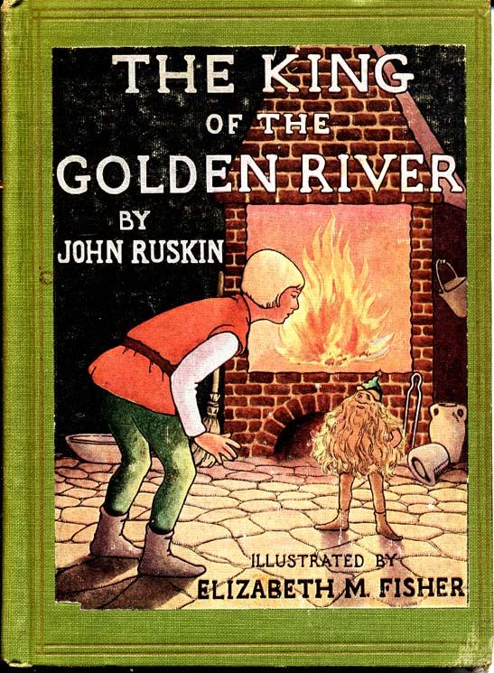

0
стр. з
0
сторінок

завантаження...

Джон Раскин
Король Золотой реки
Адаптировал Алексей Шипулин
Метод чтения Ильи Франка
Сontents
1. HOW THE AGRICULTURAL SYSTEM OF THE BLACK BROTHERS WAS INTERFERED WITH BY SOUTHWEST WIND, ESQUIRE2. OF THE PROCEEDINGS OF THE THREE BROTHERS AFTER A VISIT OF THE SOUTHWEST WIND, ESQUIRE; AND HOW LITTLE GLUCK HAD AN INTERVIEW WITH THE KING OF THE GOLDEN RIVER3. HOW MR. HANS SET OFF ON AN EXPEDITION TO THE GOLDEN RIVER, AND HOW HE PROSPERED THEREIN4. HOW MR. SCHWARTZ SET OFF ON AN EXPEDITION TO THE GOLDEN RIVER, AND HOW HE PROSPERED THEREIN5. HOW LITTLE GLUCK SET OFF ON AN EXPEDITION TO THE GOLDEN RIVER, AND HOW HE PROSPERED THEREIN; WITH OTHER MATTERS OF INTEREST
HOW THE AGRICULTURAL SYSTEM OF THE BLACK BROTHERS WAS INTERFERED WITH BY SOUTHWEST WIND, ESQUIRE
(/о том,/ как система земледелия Черных Братьев была нарушена Юго-Западным Ветром, эсквайром; system — система, устройство; строй; способ, метод; to interfere — сталкиваться, противоречить друг другу; мешать, служить препятствием; причинять вред; наносить ущерб; портить; esquire — эсквайр, господин /ставится после фамилии/).
IN a secluded and mountainous part of Stiria there was, in old time (в давние времена в уединенной/отдаленной горной части Штирии была = лежала; to seclude — отделять, изолировать; держать в уединении), a valley of the most surprising and luxuriant fertility (необычайно плодородная долина: «долина удивительнейшего и изобильнейшего плодородия»; most — наибольший; в наивысшей степени; luxuriant — буйный, пышный, богатый, изобильный). It was surrounded, on all sides, by steep and rocky mountains (со всех сторон ее окружали крутые скалистые горы: «она была окружена… горами»), rising into peaks (заканчивающиеся вершинами; to rise — в/о/сходить, подниматься; возвышаться; peak — пик; остроконечная вершина), which were always covered with snow (которые были всегда покрыты снегом) and from which a number of torrents descended in constant cataracts (и с которых непрерывными потоками спускалось = неслось несколько бурных рек; number — число, количество; a number of… — некоторое количество, несколько; torrent — стремительный поток; горная река; cataract — большой водопад; бурный поток; порог /на реке/).
secluded [sI'klu:dId], mountainous ['maVntInqs], valley ['vxlI], surprising [sq'praIzIN], luxuriant [lAg'zjVqrIqnt, lAg'ZVqrIqnt], fertility [fW'tIlItI], surrounded [sq'raVndId], covered ['kAvqd], snow [snqV], cataract ['kxtqrxkt]
IN a secluded and mountainous part of Stiria there was, in old time, a valley of the most surprising and luxuriant fertility. It was surrounded, on all sides, by steep and rocky mountains, rising into peaks, which were always covered with snow and from which a number of torrents descended in constant cataracts.
One of these fell westward (одна из них: «этих /рек/» падала = мчала свои воды на запад; to fall — падать; опускаться, спускаться; устремляться, направляться), over the face of a crag so high (по склону такой высокой скалы; face — лицо; лицевая сторона; поверхность; грань; открытый склон /горы, холма/), that, when the sun had set to everything else (что, когда солнце заходило для всего остального; to set — садиться, заходить /о светилах/), and all below was darkness (и все внизу было /окутано/ тьмой), his beams still shone full upon this waterfall (его = солнечные лучи еще ярко: «полностью/совершенно» освещали/озаряли этот водопад: «светили на этот водопад»; to shine), so that it looked like a shower of gold (так что = и он выглядел как золотой дождь/поток: «дождь золота»). It was, therefore, called by the people of the neighborhood the Golden River (поэтому люди, /жившие/ в окрестностях, назвали его/ее = эту реку Золотой рекой: «он был назван людьми…»; neighbor — сосед; соседка; neighborhood — соседство, близость; окрестности, округа).
these [DJz], westward ['westwqd], below [bI'lqV], shower ['SaVq], therefore ['DeqfL], people ['pJp(q)l], neighborhood ['neIbqhVd], golden ['gqVld(q)n], river ['rIvq]
One of these fell westward, over the face of a crag so high, that, when the sun had set to everything else, and all below was darkness, his beams still shone full upon this waterfall, so that it looked like a shower of gold. It was, therefore, called by the people of the neighborhood the Golden River.
It was strange that (странно/удивительно было /то/, что = как ни странно) none of these streams fell into the valley itself (ни одна из этих рек не падала/спускалась = текла в саму долину; stream — поток, /небольшая/ река, ручей). They all descended on the other side of the mountains (все они сбегали с другой = противоположной стороны гор), and wound away through broad plains (и извивались = извиваясь, бежали вдаль по широким равнинам; to wind — виться, извиваться; away — прочь; c глаголами означает движение в сторону, удаление; through — через, сквозь, по) and by populous cities (и через многолюдные города; by — у, при, около; вдоль, по, мимо; сквозь, через). But the clouds were drawn so constantly to the snowy hills (но облака столь сильно: «постоянно/неизменно» тянуло: «облака притягивались» к снежным вершинам; hill — возвышение, возвышенность, холм; to draw), and rested so softly in the circular hollow (и /они/ столь безмятежно отдыхали/покоились над круглой ложбиной; softly — мягко, нежно; тихо, спокойно; неторопливо; ненавязчиво; удобно, приятно; hollow — пустота, полость; углубление, впадина; низина; лощина, ложбина), that, in time of drought and heat (что во время засухи и жары), when all the country round was burnt up (когда вся местность вокруг была = становилась выжженной; to burn — гореть; палить, жечь; up — вверх, наверх; /зд./ обозначает завершенность действия, доведение его до конца), there was still rain in the little valley (в маленькой долине все еще бывали дожди); and its crops were so heavy (и ее урожай = урожай в ней был столь обилен; heavy — тяжелый; крупный, массивный; обильный, буйный /о растительности/), and its hay so high (трава столь высока; hay — сено; трава на сено), and its apples so red (яблоки столь красны), and its grapes so blue (а виноград такой синий), and its wine so rich (вино такое ароматное; rich — богатый; насыщенный; пряный, терпкий, сильный /о запахе/) and its honey so sweet (а мед так сладок), that it was a marvel to everyone who beheld it (что она = долина была чудом для всех = казалась чудом всем, кто ее видел; to behold — узреть, увидеть; смотреть, созерцать), and was commonly called the Treasure Valley (и называли ее не иначе как Долиной богатств: «называлась обычно/всеми Долиной богатств»; common — /все/общий; общепринятый; commonly — обычно, обыкновенно, как правило, в большинстве случаев).
strange [streInG], none [nAn], other ['ADq], through [θru:], broad [brLd], drought [draVt], honey ['hAnI], treasure ['treZq]
It was strange that none of these streams fell into the valley itself. They all descended on the other side of the mountains, and wound away through broad plains and by populous cities. But the clouds were drawn so constantly to the snowy hills, and rested so softly in the circular hollow, that, in time of drought and heat, when all the country round was burnt up, there was still rain in the little valley; and its crops were so heavy, and its hay so high, and its apples so red, and its grapes so blue, and its wine so rich, and its honey so sweet, that it was a marvel to everyone who beheld it, and was commonly called the Treasure Valley.
The whole of this little valley belonged to three brothers (вся эта маленькая долина принадлежала трем братьям), called Schwartz, Hans, and Gluck (называемым = которых звали Шварц, Ганс и Глюк). Schwartz and Hans, the two elder brothers, were very ugly men (два старших брата, Шварц и Ганс, были очень безобразными/неприятными мужчинами), with overhanging eyebrows (с нависшими/торчащими бровями; to hang — висеть; свисать) and small, dull eyes which were always half shut (и маленькими тусклыми глазками, которые всегда были полузакрыты; dull — тупой, глупый; тусклый, слабый; half — половина; наполовину; полу-), so that you couldn't see into them (так что было невозможно: «ты не мог» заглянуть в них; couldn't = could not), and always fancied they saw very far into you (но всегда казалось: «/ты/ воображал/думал», что они очень глубоко: «далеко» смотрят в тебя; to fancy — воображать, представлять себе; думать, считать, /пред/полагать).
whole [hqVl], belonged [bI'lONd], eyebrow ['aIbraV], half [hRf], couldn't ['kVdnt], fancied ['fxnsId]
The whole of this little valley belonged to three brothers, called Schwartz, Hans, and Gluck. Schwartz and Hans, the two elder brothers, were very ugly men, with overhanging eyebrows and small, dull eyes which were always half shut, so that you couldn't see into them, and always fancied they saw very far into you.
They lived by farming the Treasure Valley (они жили тем, что возделывали землю в Долине богатств; to live by smth. — жить, зарабатывать на жизнь /чем-либо/; to farm — заниматься сельским хозяйством; возделывать, обрабатывать /землю/, держать скот), and very good farmers they were (и славными же фермерами они были). They killed everything that did not pay for its eating (они убивали всех живых существ, которые питались на их земле, не принося им какой-нибудь пользы: «все, что не платило за свою еду»). They shot the blackbirds (они стреляли черных дроздов; to shoot; bird — птица), because they pecked the fruit (потому что те клевали плоды); and killed the hedgehogs (и убивали ежей), lest they should suck the cows (чтобы те не сосали /молоко у/ коров; lest — чтобы не, как бы не; should — вспомогательный глагол; здесь служит в сочетании с союзом lest для выражения события, которого опасаются); they poisoned the crickets for eating the crumbs in the kitchen (они травили сверчков за то, что те поедали крошки на кухне); and smothered the cicadas (и уничтожали при помощи дыма цикад; smother — едкий, удушливый дым; to smother — душить; окутывать дымом; травить дымом или газом) which used to sing all summer in the lime trees (которые все лето распевали/стрекотали в липах; used to — /используется при описании событий, которые регулярно происходили в прошлом/ иметь обыкновение, обычно). They worked their servants without any wages (они заставляли своих работников батрачить без какой-либо платы; to work — работать; заставлять работать; эксплуатировать, использовать; servant — слуга; /farm servant/ сельскохозяйственный рабочий; батрак; wage/s/ — заработная плата /рабочих/), till they would not work any more (пока те не бросали работу: «решительно отказывались работать сколько-нибудь еще»; would — вспомогательный глагол; с отрицанием часто служит для выражения решительного нежелания делать что-либо), and then quarreled with them (а тогда затевали с ними ссору; to quarrel — ссориться, ругаться, браниться), and turned them out-of-doors without paying them (и выгоняли их за ворота, не заплатив; to turn — поворачивать/ся/; отправлять, выгонять; door — дверь; without — без; /перед герундием и отглагольным существительным/ без того, чтобы; не /делая что-либо/).
fruit [fru:t], hedgehog ['heGhOg], should [SVd], smother ['smADq], quarrel ['kwOrql]
They lived by farming the Treasure Valley, and very good farmers they were. They killed everything that did not pay for its eating. They shot the blackbirds, because they pecked the fruit; and killed the hedgehogs, lest they should suck the cows; they poisoned the crickets for eating the crumbs in the kitchen; and smothered the cicadas which used to sing all summer in the lime trees. They worked their servants without any wages, till they would not work any more, and then quarreled with them, and turned them out-of-doors without paying them.
It would have been very odd (было бы очень странно; would используется для образования условного наклонения), if, with such a farm and such a system of farming, they hadn't got very rich (если бы с такими угодьями и при таком способе ведения хозяйства они = братья не стали очень богатыми; to get — получать; добывать; достигать; становиться, делаться); and very rich they did get (и они действительно стали очень богатыми; do/did в утвердительных предложениях употребляется для усиления значения действия). They generally contrived to keep their corn by them (обычно им удавалось придержать зерно: «держать зерно у себя»; to contrive — придумывать, изобретать; суметь, умудриться, ухитриться; замышлять, затевать) till it was very dear (пока оно не было = становилось очень дорогим), and then sell it for twice its value (а потом продать его за двойную цену; twice — дважды; вдвое; value — ценность; стоимость, цена); they had heaps of gold lying about on their floors (на полу у них лежали груды золота: «они имели груды золота, лежащие повсюду на их полах»), yet it was never known (однако никто не слышал: «не было = не становилось никогда известно»; to know — знать) that they had given so much as a penny or a crust in charity (чтобы они дали нищему: «в виде милостыни» хотя бы пенни или корку хлеба; charity — любовь /к ближнему/; милосердие; сострадание; милостыня, подаяние; благотворительность); they never went to mass (они никогда не ходили к обедне; to go), grumbled perpetually at paying tithes (вечно/постоянно ворчали по поводу уплаты церковной десятины; tithe — десятая часть; /часто во мн. ч./ церковная десятина); and were, in a word, of so cruel and grinding a temper (одним словом, у них был столь жестокий и тяжелый нрав: «были столь жестокого… нрава»; to grind — молоть, перемалывать; мучить, угнетать; досаждать), as to receive from all those with whom they had any dealings, the nickname of the "Black Brothers" (что все, кто имел с ними дело, звали их Черными Братьями: «чтобы получить ото всех, с кем они имели какие-либо дела, прозвище "Черные Братья"»).
value ['vxlju:], given ['gIv(q)n], charity ['CxrItI], perpetually [pq'peCVqlI], grinding ['graIndIN], receive [rI'sJv]
It would have been very odd, if, with such a farm and such a system of farming, they hadn't got very rich; and very rich they did get. They generally contrived to keep their corn by them till it was very dear, and then sell it for twice its value; they had heaps of gold lying about on their floors, yet it was never known that they had given so much as a penny or a crust in charity; they never went to mass, grumbled perpetually at paying tithes; and were, in a word, of so cruel and grinding a temper, as to receive from all those with whom they had any dealings, the nickname of the "Black Brothers."
The youngest brother, Gluck, was as completely opposed, in both appearance and character, to his seniors (младший брат, Глюк, был настолько: «так совершенно» не похож на своих старших /братьев/ как по внешности, так и по характеру; opposed — противоположный, совершенно несходный; both... and — и... и...; как..., так и) as could possibly be imagined or desired (насколько /это/ вообще можно было себе представить или желать; possibly — возможно; /усил./ как только возможно). He was not above twelve years old (он был не старше двенадцати лет /от роду/; above — над, выше; больше чем, свыше), fair, blue-eyed (светловолосый, голубоглазый; fair — красивый; чистый, незапятнанный; белокурый; светлый), and kind in temper to every living thing (и любил все живое: «/был/ добр/доброжелателен нравом ко всякому живому существу»). He did not, of course, agree particularly well with his brothers (неудивительно, что он не особенно хорошо уживался со своими братьями; of course — конечно, несомненно, само собой разумеется; to agree — соглашаться; сходиться во взглядах; ладить, уживаться), or rather, they did not agree with him (или, вернее сказать, они не уживались с ним).
youngest ['jANgIst], completely [kqm'plJtlI], imagine [I'mxGIn], particularly [pq'tIkjVlqlI]
The youngest brother, Gluck, was as completely opposed, in both appearance and character, to his seniors as could possibly be imagined or desired. He was not above twelve years old, fair, blue-eyed, and kind in temper to every living thing. He did not, of course, agree particularly well with his brothers, or rather, they did not agree with him.
He was usually appointed to the honorable office of turnspit (он = Глюк обычно получал почетное задание вращать вертел: «назначался на почетную должность вращающего вертел»; honor — честь; почет; to turn — поворачивать; вращать; spit — вертел, шампур), when there was anything to roast, which was not often (когда /в доме/ было что-нибудь для жарения: «чтобы жарить», что случалось не часто); for, to do the brothers justice, they were hardly less sparing upon themselves than upon other people (поскольку братья, надо отдать им должное, были едва ли менее скупы по отношению к себе самим, чем к другим людям; justice — справедливость; to spare — щадить; беречь, жалеть, экономить). At other times he used to clean the shoes (в другое время Глюк чистил обувь; clean чистый; to clean — чистить; мыть), floors, and sometimes the plates (/мыл/ полы и иногда тарелки), occasionally getting what was left on them, by way of encouragement (при случае/иногда получая /то/, что оставалось: «бывало оставлено» на них, в качестве поощрения; occasion — случай; to leave; encouragement — ободрение; поощрение; way — дорога; путь; метод, способ; to encourage — ободрять; вселять мужество, надежду; воодушевлять), and a wholesome quantity of dry blows, by way of education (и щедрую/добрую порцию тумаков, в качестве /меры/ воспитания; wholesome — полезный; благотворный; quantity — количество; dry — сухой; dry blow — удар, не вызывающий наружного кровотечения; резкий удар).
honourable ['On(q)rqb(q)l], encouragement [In'kArIGmqnt], wholesome ['hqVls(q)m]
He was usually appointed to the honorable office of turnspit, when there was anything to roast, which was not often; for, to do the brothers justice, they were hardly less sparing upon themselves than upon other people. At other times he used to clean the shoes, floors, and sometimes the plates, occasionally getting what was left on them, by way of encouragement, and a wholesome quantity of dry blows, by way of education.
Things went on in this manner for a long time (так продолжалось: «дела шли таким образом» долгое время; thing — вещь, предмет; /мн. ч./ обстоятельства, дела; to go on — идти дальше; продолжаться; manner — способ; образ действий; манера). At last came a very wet summer (наконец пришло = но вот наступило очень сырое/дождливое лето), and everything went wrong in the country round (и в окрестностях: «в местности вокруг» все разладилось: «пошло не так»; wrong — неправильно, неверно; не так, как нужно). The hay had hardly been got in (сено было едва только убрано; to get in) when the haystacks were floated bodily down to the sea by an inundation (когда все стога до одного были унесены наводнением в море = наводнение унесло все стога в море; to float — держаться на поверхности воды; гнать, перемещать /по воде/; bodily — во плоти; как единое целое, вместе, все как один; body — тело; плоть); the vines were cut to pieces with the hail (виноградные лозы были порезаны/посечены на куски градом; to cut); the corn was all killed by a black blight (пшеница вся погублена головней: «черной болезнью»; corn — зерно; зерновые хлеба; наиболее важная для данной местности злаковая культура: пшеница /в Англии/, овес /в Шотландии и Ирландии/, рожь, кукуруза; blight — болезнь растений, характеризующаяся завяданием, прекращением роста, опаданием листьев /ложная мучнистая роса, ржавчина, головня и др./); only in the Treasure Valley, as usual, all was safe (только в Долине богатств все оставалось как обычно/всегда целым и невредимым; safe — защищенный от опасности; невредимый).
bodily ['bOdIlI], inundation ["Inqn'deIS(q)n], usual ['ju:ZVql]
Things went on in this manner for a long time. At last came a very wet summer, and everything went wrong in the country round. The hay had hardly been got in when the haystacks were floated bodily down to the sea by an inundation; the vines were cut to pieces with the hail; the corn was all killed by a black blight; only in the Treasure Valley, as usual, all was safe.
As it had rain when there was rain nowhere else (как /раньше/ здесь шел: «она имела» дождь, когда нигде больше дождя не было), so it had sun when there was sun nowhere else (так /теперь/ здесь было = светило солнце, в то время как нигде больше солнца не было). Everybody came to buy corn at the farm (все приходили на усадьбу покупать пшеницу), and went away pouring maledictions on the Black Brothers (и уходили, изливая проклятья на Черных Братьев). They asked what they liked and got it, except from the poor people (те запрашивали любую цену, какая им заблагорассудится, и все платили им, кроме бедняков: «просили /все/ что хотели и получали это /ото всех/, кроме как от бедных людей»), who could only beg (которые могли только просить подаяние), and several of whom were starved at their very door (и несколько из них умерло от голода у самой двери /дома братьев/), without the slightest regard or notice (на что те не обратили ни малейшего внимания: «без малейшей заботы или внимания»; regard — внимание, рассмотрение; забота, беспокойство; notice — извещение, сообщение; внимание).
pouring ['pLrIN], malediction ["mxlI'dIkS(q)n], notice ['nqVtIs]
As it had rained when there was rain nowhere else, so it had sun when there was sun nowhere else. Everybody came to buy corn at the farm, and went away pouring maledictions on the Black Brothers. They asked what they liked and got it, except from the poor people, who could only beg, and several of whom were starved at their very door, without the slightest regard or notice.
It was drawing towards winter (близилась зима: «/дело/ шло к зиме»; to draw — тащить, волочить; подтягиваться; постепенно двигаться /в каком-то направлении/), and very cold weather (и было очень холодно: «/была/ очень холодная погода»), when one day the two elder brothers had gone out (когда однажды двое старших братьев ушли из дома), with their usual warning to little Gluck (как всегда предупредив маленького Глюка: «со своим обычным предупреждением…»), who was left to mind the roast (которого они оставили: «который был оставлен» следить за жарящимся мясом; to roast — жарить/ся/; roast — жаркое), that he was to let nobody in (что он не должен никого впускать; to let — позволять, разрешать; to let in — позволять войти, впускать), and give nothing out (и /никому/ ничего давать). Gluck sat down quite close to the fire (Глюк сел у самого огня: «совсем близко к огню»), for it was raining very hard (потому что шел сильный дождь), and the kitchen walls were by no means dry or comfortable-looking (и стены кухни были сырыми и холодными: «кухонные стены никоим образом не были сухими или = и выглядящими уютно = создающими уют»; means — средство, способ).
drawing ['drLIN], towards [tq'wLdz], weather ['weDq], comfortable ['kAmf(q)tqb(q)l]
It was drawing towards winter, and very cold weather, when one day the two elder brothers had gone out, with their usual warning to little Gluck, who was left to mind the roast, that he was to let nobody in, and give nothing out. Gluck sat down quite close to the fire, for it was raining very hard, and the kitchen walls were by no means dry or comfortable-looking.
He turned and turned (он /все/ поворачивал и поворачивал /мясо/), and the roast got nice and brown (и жаркое становилось аппетитным и румяным: «коричневым»; nice — хороший, приятный; хорошо сделанный; вкусный /о пище/). "What a pity (как жаль: «какая жалость»)," thought Gluck (подумал Глюк; to think), "my brothers never ask anybody to dinner (что мои братья никогда никого не приглашают на обед). I'm sure (я уверен), when they've got such a nice piece of mutton as this (/что сейчас/, когда у них есть такой славный кусок баранины), and nobody else has got so much as a piece of dry bread (а ни у кого другого нет даже куска сухого = черствого хлеба), it would do their hearts good to have somebody to eat it with them (их сердца порадовались бы, если бы кто-нибудь поел вместе с ними; to do smb.'s heart good — радовать сердце, доставлять кому-либо удовольствие)."
brown [braVn], piece [pJs], heart [hRt]
He turned and turned, and the roast got nice and brown. "What a pity," thought Gluck, "my brothers never ask anybody to dinner. I'm sure, when they've got such a nice piece of mutton as this, and nobody else has got so much as a piece of dry bread, it would do their hearts good to have somebody to eat it with them."
Just as he spoke (как раз когда он /это/ говорил; to speak) there came a double knock at the house door, yet heavy and dull (раздался двойной стук в дверь = в дверь два раза постучали, но /звук был/ тяжелый и глухой; dull — тупой, глупый; притупленный, приглушенный), as though the knocker had been tied up (как будто дверной молоток был обвязан; knocker — тот, кто или то, что стучит; дверной молоток, дверное кольцо) — more like a puff than a knock (скорее, не стук, а удар ветра: «больше похоже на дуновение /ветра/, а не на стук»; puff — дуновение, порыв /ветра/; звук, издаваемый при выдохе или выпуске воздуха).
"It must be the wind (должно быть, это ветер: «это должен быть ветер»)," said Gluck (сказал Глюк; to say); "nobody else would venture to knock double knocks at our door (никто другой не осмелился бы постучать в нашу дверь два раза; to venture — рисковать; отважиться, осмелиться; venture — рискованное, смелое предприятие; авантюра)."
No, it wasn't the wind (/но/ нет, это был не ветер); there it came again very hard (вот он = стук раздался снова, /на этот раз/ очень сильный; hard — жесткий, твердый; энергично, активно; сильно), and what was particularly astounding (и, что было особенно удивительно), the knocker seemed to be in a hurry (стучавший, казалось, очень спешил: «был в спешке») and not to be in the least afraid of the consequences (и совершенно не боялся последствий; not in the least — ни в малейшей степени, ничуть). Gluck went to the window, opened it (подошел к окну, открыл его), and put his head out to see who it was (и высунул голову посмотреть, кто это; to put out — выставлять; высовывать).
double [dAbl], heavy ['hevI], though [DqV], consequence ['kOnsIkwqns]
Just as he spoke there came a double knock at the house door, yet heavy and dull, as though the knocker had been tied up — more like a puff than a knock.
"It must be the wind," said Gluck; "nobody else would venture to knock double knocks at our door."
No, it wasn't the wind; there it came again very hard, and what was particularly astounding, the knocker seemed to be in a hurry and not to be in the least afraid of the consequences. Gluck went to the window, opened it, and put his head out to see who it was.
It was the most extraordinary-looking little gentleman (это был = у двери стоял самый необычный: «необычно выглядящий» маленький джентльмен; extraordinary — необычайный; выдающийся, исключительный) that he had ever seen in his life (какого он = Глюк когда-либо видел в жизни). He had a very large nose (у него был очень большой нос), slightly brass-colored (слегка красноватого цвета: «цвета латуни»; color — цвет; оттенок; тон); his cheeks were very round, and very red (его щеки были очень круглые и очень красные), and might have warranted a supposition (и могли бы служить основанием для предположения; to warrant — ручаться, гарантировать; оправдывать, служить основанием) that he had been blowing a refractory fire for the last eight-and-forty hours (что последние сорок восемь часов он раздувал огонь, который никак не хотел разгораться: «непокорный/упрямый огонь»); his eyes twinkled merrily through long silky eyelashes (глаза его весело сверкали из-под длинных шелковистых ресниц: «сквозь длинные…»; silk — шелк), his moustaches curled twice round like a corkscrew on each side of his mouth (усы образовывали по два завитка с каждой стороны рта и торчали, словно два штопора: «завивались дважды кругом, как штопор, с каждой стороны рта»; cork — пробка; screw — винт, шуруп), and his hair, of a curious mixed pepper-and-salt color, descended far over his shoulders (а его волосы, /какого-то/ странного, смешанного цвета перца и соли, спускались намного ниже плеч). He was about four feet six in height (ростом он был около четырех футов шести /дюймов/; foot /мн. ч./ feet — ступня; фут /= 1/3 ярда, = 30,48 см/; height — высота; рост), and wore a conical-pointed cap of nearly the same altitude (а на голове у него был остроконечный колпак почти такой же высоты, /как он сам/; to wear — иметь на себе, носить /одежду и т. п./; conical — конический, конусообразный; point — точка; кончик; острие; наконечник; cap — шапка; /любой/ головной убор), decorated with a black feather some three feet long (украшенный черным пером около трех футов длиной).
extraordinary [Ik'strLd(q)n(q)rI], brass-colored ['brRs"kAlqd], moustache [mq'stRS]
It was the most extraordinary-looking little gentleman that he had ever seen in his life. He had a very large nose, slightly brass-colored; his cheeks were very round, and very red, and might have warranted a supposition that he had been blowing a refractory fire for the last eight-and-forty hours; his eyes twinkled merrily through long silky eyelashes, his moustaches curled twice round like a corkscrew on each side of his mouth, and his hair, of a curious mixed pepper-and-salt color, descended far over his shoulders. He was about four feet six in height, and wore a conical-pointed cap of nearly the same altitude, decorated with a black feather some three feet long.
His doublet was prolonged behind (его камзол был удлинен сзади) into something resembling a violent exaggeration of what is now termed a "swallow-tail," (/и переходил/ в нечто напоминающее чрезмерно увеличенную разновидность: «сильное увеличение» того, что сейчас называют “ласточкиным хвостом”; violent — неистовый, яростный; интенсивный, сильный; to exaggerate — преувеличивать; чрезмерно увеличивать; swallow-tail — ласточкин хвост; фрак) but was much obscured by the swelling folds of an enormous black, glossy-looking cloak (но /он/ был в большой степени скрыт раздувавшимися складками огромного блестящего плаща; to obscure — затемнять, затенять; загораживать, скрывать; gloss — блеск; лоск; глянец), which must have been very much too long in calm weather (который был, по-видимому, слишком уж длинен в тихую погоду), as the wind, whistling round the old house, carried it clear out from the wearer's shoulders to about four times his own length (потому что /сейчас/ ветер, свистящий = со свистом кружащийся вокруг старого дома, относил его = плащ от спины: «плеч» его обладателя на расстояние, в добрых четыре раза превышающее его рост; clear — светлый, ясный; /нареч./ ясно, четко; совсем, совершенно, начисто; wearer — тот, на ком надета определенная одежда; владелец /шляпы, пальто и т. п./).
doublet ['dAblIt], resemble [rI'zemb(q)l], exaggeration [Ig"zxGq'reIS(q)n], whistling ['wIslIN]
His doublet was prolonged behind into something resembling a violent exaggeration of what is now termed a "swallow-tail," but was much obscured by the swelling folds of an enormous black, glossy-looking cloak, which must have been very much too long in calm weather, as the wind, whistling round the old house, carried it clear out from the wearer's shoulders to about four times his own length.
Gluck was so perfectly paralyzed by the singular appearance of his visitor (Глюк был настолько: «так совершенно» поражен необыкновенным видом гостя/посетителя; singular — единичный, единственный в своем роде; исключительный, необыкновенный), that he remained fixed without uttering a word (что застыл на месте и не мог произнести ни слова: «оставался неподвижным, не произнося /ни/ слова»), until the old gentleman, having performed another and a more energetic concerto on the knocker, turned round (пока /наконец/ пожилой джентльмен, исполнив дверным молотком еще один, и /на этот раз/ более энергичный концерт, не обернулся) to look after his fly-away cloak (чтобы позаботиться о своем развевающемся плаще = подобрать свой… плащ; to look after… — смотреть за кем-либо, чем-либо; заботиться о чем-либо). In so doing he caught sight of Gluck's little yellow head jammed in the window (при этом: «делая так = это» он заметил маленькую желтую = желтоволосую голову Глюка, застывшую в окне; to jam — зажимать, сжимать, блокировать; застревать), with his mouth and eyes very wide open indeed (c вовсю открытыми глазами и ртом: «со ртом и глазами по-настоящему очень широко открытыми»; indeed — в самом деле, действительно; по-настоящему, еще как).
perfectly ['pWfIktlI], singular ['sINgjVlq], appearance [q'pIqrqns], concerto [kqn'CWtqV]
Gluck was so perfectly paralyzed by the singular appearance of his visitor, that he remained fixed without uttering a word, until the old gentleman, having performed another and a more energetic concerto on the knocker, turned round to look after his fly-away cloak. In so doing he caught sight of Gluck's little yellow head jammed in the window, with his mouth and eyes very wide open indeed.
"Hollo (эй)!" said the little gentleman (сказал маленький джентльмен); "that's not the way to answer the door (не годится так отвечать на стук в дверь; way — путь; дорога; образ действия; метод, способ); I'm wet (я мокрый = промок); let me in (впусти /же/ меня)."
To do the little gentleman justice, he was wet (надо отдать должное этому маленькому джентльмену: он действительно промок; justice — справедливость; to do justice — воздать/отдать должное). His feather hung down between his legs like a beaten puppy's tail (перо /его шляпы/ висело у него между ног, как хвост /у/ побитого щенка; to hang down — свисать вниз; to beat), dripping like an umbrella (c него, как с зонтика, стекала вода: «капая, как зонтик»); and from the ends of his moustaches the water was running into his waistcoat pockets and out again like a mill stream (а с кончиков его усов вода бежала в карманы жилета, а оттуда дальше вниз: «и снова наружу», как мельничный поток/ручей = поток, вращающий мельничное колесо).
answer ['Rnsq], justice ['GAstIs], umbrella [Am'brelq]
"Hollo!" said the little gentleman; "that's not the way to answer the door; I'm wet; let me in."
To do the little gentleman justice, he was wet. His feather hung down between his legs like a beaten puppy's tail, dripping like an umbrella; and from the ends of his moustaches the water was running into his waistcoat pockets and out again like a mill stream.
"I beg pardon, sir (прошу прощения, сэр)," said Gluck, "I'm very sorry, but I really can't (мне очень жаль, но я никак не могу)."
"Can't what (не можешь — что)?" said the old gentleman.
"I can't let you in, sir (не могу впустить вас, сэр) — I can't, indeed (правда не могу); my brothers would beat me to death, sir (мои братья избили бы меня до смерти, сэр), if I thought of such a thing (если бы я /даже/ помыслил о чем-то подобном: «о такой вещи»). What do you want, sir (что вы хотите, сэр)?"
"Want (/что/ хочу)?" said the old gentleman petulantly (раздраженно), "I want fire and shelter (хочу тепла: «огня» и крова; shelter — укрытие, прикрытие; кров, пристанище); and there's your great fire there blazing, crackling, and dancing on the wall (и вот, твой большой огонь пылает/сверкает, трещит и пляшет на стенах), with nobody to feel it (и никто не чувствует его = его тепла). Let me in, I say (впусти же меня); I only want to warm myself (я хочу только погреться)."
thought [θLt], petulantly ['petjVlqntlI], dance [dRns]
"I beg pardon, sir," said Gluck, "I'm very sorry, but I really can't."
"Can't what?" said the old gentleman.
"I can't let you in, sir — I can't, indeed; my brothers would beat me to death, sir, if I thought of such a thing. What do you want, sir?"
"Want?" said the old gentleman petulantly, "I want fire and shelter; and there's your great fire there blazing, crackling, and dancing on the wall, with nobody to feel it. Let me in, I say; I only want to warm myself."
Gluck had had his head, by this time, so long out of the window (к этому времени голова Глюка /уже/ так долго была высунута из окна) that he began to feel it was really unpleasantly cold (что он начал ощущать, /что на улице/ действительно очень: «неприятно» холодно); and when he turned (а когда обернулся) and saw the beautiful fire rustling (и увидел, как великолепный огонь потрескивает; to rustle — хрустеть, трещать, шелестеть) and roaring (и гудит) and throwing long bright tongues up the chimney (и выбрасывает длинные яркие языки /пламени/ в дымоход), as if it were licking its chops at the savory smell of the leg of mutton (как будто облизывает свои губы, чувствуя аппетитный запах бараньей ноги; chops — челюсти; щеки; рот, пасть; savory — пикантный, пряный; приятный на вкус, аппетитный; savor — особый вкус или запах /чего-либо/), his heart melted within him that it should be burning away for nothing (сердце у него растаяло /и ему стало жаль/, что он = огонь горит впустую). "He does look very wet (он и /вправду/ выглядит очень мокрым)," said little Gluck; "I'll just let him in for a quarter of an hour (впущу-ка я его на четверть часа)." Round he went to the door and opened it (повернувшись, он подошел к двери и открыл ее; round — вокруг; кругом; вспять, назад, обратно); and as the little gentleman walked in (и когда маленький джентльмен вошел) there came a gust of wind through the house (по дому пронесся порыв ветра) that made the old chimneys totter (от которого задрожали: «который заставил задрожать» старые трубы).
unpleasantly [An'plez(q)ntlI], tongue [tAN], chimney ['CImnI], heart [hRt]
Gluck had had his head, by this time, so long out of the window that he began to feel it was really unpleasantly cold; and when he turned and saw the beautiful fire rustling and roaring and throwing long bright tongues up the chimney, as if it were licking its chops at the savory smell of the leg of mutton, his heart melted within him that it should be burning away for nothing. "He does look very wet," said little Gluck; "I'll just let him in for a quarter of an hour." Round he went to the door and opened it; and as the little gentleman walked in there came a gust of wind through the house that made the old chimneys totter.
"That's a good boy (вот хороший мальчик)," said the little gentleman. "Never mind your brothers (не беспокойся о своих братьях). I'll talk to them (я поговорю с ними)."
"Pray, sir, don't do any such thing (прошу, сэр, не делайте этого)," said Gluck. "I can't let you stay till they come (я не могу позволить вам остаться до из прихода: «пока они придут»); they'd be the death of me (это было бы для меня смертью)."
"Dear me (Боже мой)," said the old gentleman, "I'm very sorry to hear that (мне очень жаль слышать это). How long may I stay (сколько времени: «как долго» могу я /здесь/ провести)?"
"Only till the mutton's done, sir (только пока не поджарится баранина)," replied Gluck (ответил Глюк), "and it's very brown (а она уже очень румяная: «коричневая»)."
mind [maInd], death [deθ], reply [rI'plaI]
"That's a good boy," said the little gentleman. "Never mind your brothers. I'll talk to them."
"Pray, sir, don't do any such thing," said Gluck. "I can't let you stay till they come; they'd be the death of me."
"Dear me," said the old gentleman, "I'm very sorry to hear that. How long may I stay?"
"Only till the mutton's done, sir," replied Gluck, "and it's very brown."
Then the old gentleman walked into the kitchen (затем старый джентльмен прошел в кухню) and sat himself down on the hob (и уселся на выступ /у очага/; hob — полка в камине для подогревания пищи), with the top of his cap accommodated up the chimney (/при этом/ верхушку своего колпака он просунул в дымоход: «с верхушкой колпака просунутой вверх в дымоход»; to accommodate — приспосабливать; устраивать, размещать), for it was a great deal too high for the roof (потому что он был слишком высок для крыши = не помещался под потолком).
"You'll soon dry there, sir (вы быстро там высохнете, сэр)," said Gluck, and sat down again to turn the mutton (и снова сел вертеть баранину). But the old gentleman did not dry there (но старик не обсыхал там), but went on drip, drip, dripping among the cinders (но продолжал капать, капать, роняя капли = с него все капало и капало, и капли падали на раскаленные угли; among — между, посреди), and the fire fizzed and sputtered (и = отчего огонь/камин шипел и трещал; to sputter — брызгать слюной; плеваться; шкворчать, шипеть, трещать) and began to look very black and uncomfortable (и стал выглядеть очень черным и слабым: «неблагополучным»; uncomfortable — испытывающий неудобство, стесненный; comfort — содействие, поддержка; комфорт, уют; благополучие, хорошие условия); never was such a cloak (плащ был какой-то необыкновенный: «никогда /еще/ не бывало такого плаща»); every fold in it ran like a gutter (c каждой складки в нем текло, как с водосточного желоба; to run — бежать; струиться, течь).
accommodate [q'kOmqdeIt], cinders ['sIndqz], uncomfortable [An'kAmf(q)tqb(q)l]
Then the old gentleman walked into the kitchen and sat himself down on the hob, with the top of his cap accommodated up the chimney, for it was a great deal too high for the roof.
"You'll soon dry there, sir," said Gluck, and sat down again to turn the mutton. But the old gentleman did not dry there, but went on drip, drip, dripping among the cinders, and the fire fizzed and sputtered and began to look very black and uncomfortable; never was such a cloak; every fold in it ran like a gutter.
"I beg pardon, sir (прошу прощения = простите, сэр)," said Gluck at length (сказал наконец Глюк), after watching the water spreading in long, quicksilver-like streams over the floor for a quarter of an hour (после того как в течение четверти часа наблюдал, как вода растекается по полу длинными, переливающимися, как ртуть, ручейками; to spread — разворачивать/ся/; распространяться; растекаться; quicksilver — ртуть /досл. “живое серебро”/; quick — живой /арх./; быстрый); "mayn't I take your cloak (нельзя ли мне взять ваш плащ; mayn't = may not)?"
"No, thank you (нет, спасибо)," said the old gentleman.
"Your cap, sir (/а/ ваш колпак)?"
"I am all right, thank you (спасибо, не нужно: «мне /и так/ хорошо»)," said the old gentleman rather gruffly (довольно грубо/резко).
"But — sir — I'm very sorry (но... сэр... простите)," said Gluck hesitatingly (нерешительно/неуверенно; to hesitate — медлить, находиться в нерешительности, не решаться); "but — really, sir — you're putting the fire out (но, честное слово, сэр, вы... гасите огонь; to put out)."
"It'll take longer to do the mutton then (тогда баранина будет готовиться дольше: «потребуется больше времени, чтобы приготовить баранину»; to take — брать; занимать, отнимать, требовать /времени, активности/; to do — делать, выполнять; готовить /пищу/)," replied his visitor dryly (сухо ответил гость).
spread [spred], quicksilver ['kwIk"sIlvq], hesitatingly ['hezIteItINlI]
"I beg pardon, sir," said Gluck at length, after watching the water spreading in long, quicksilver-like streams over the floor for a quarter of an hour; "mayn't I take your cloak?"
"No, thank you," said the old gentleman.
"Your cap, sir?"
"I am all right, thank you," said the old gentleman rather gruffly.
"But — sir — I'm very sorry," said Gluck hesitatingly; "but — really, sir — you're putting the fire out."
"It'll take longer to do the mutton then," replied his visitor dryly.
Gluck was very much puzzled by the behavior of his guest (Глюк был немало удивлен: «очень сильно озадачен» поведением своего гостя); it was such a strange mixture of coolness and humility (в нем странным образом сочетались дерзость и смирение/скромность: «это была странная смесь…»; cool — прохладный; невозмутимый; дерзкий, нахальный). He turned away at the string meditatively for another five minutes (Глюк еще пять минут продолжал задумчиво вращать веревку, /на которой было подвешено мясо/).
"That mutton looks very nice (баранина выглядит очень аппетитно; nice — хороший, приятный; хорошо сделанный; вкусный)," said the old gentleman at length (наконец). "Can't you give me a little bit (не мог бы ты дать мне маленький кусочек)?"
"Impossible, sir (/это/ невозможно, сэр)," said Gluck.
behavior [bI'heIvIq], humility [hju:'mIlItI], meditatively ['medItqtIvlI]
Gluck was very much puzzled by the behavior of his guest; it was such a strange mixture of coolness and humility. He turned away at the string meditatively for another five minutes.
"That mutton looks very nice," said the old gentleman at length. "Can't you give me a little bit?"
"Impossible, sir," said Gluck.
"I'm very hungry (я очень голоден)," continued the old gentleman (продолжал старик); "I've had nothing to eat yesterday nor to-day (мне было нечего поесть = я ничего не ел ни вчера, ни сегодня). They surely couldn't miss a bit from the knuckle (им, конечно же, не станет жалко кусочка от ножки: «они наверняка не смогут пожалеть /о/…»; to miss — промахнуться; обнаружить или чувствовать отсутствие или пропажу; сожалеть об пропаже /чего-либо/; knuckle — выступающий сустав /особ. пальца/, костяшка; ножка, голяшка /телячья, баранья/)!"
He spoke in so very melancholy a tone (он говорил таким печальным тоном) that it quite melted Gluck's heart (что совсем разжалобил сердце Глюка: «он /тон/ совсем растопил сердце Глюка»). "They promised me one slice to-day, sir (они пообещали мне сегодня один ломтик, сэр)," said he; "I can give you that, but not a bit more (я могу дать его вам, но ни кусочка больше)."
"That's a good boy (вот хороший мальчик)," said the old gentleman again (снова).
continue [kqn'tInju:], knuckle ['nAk(q)l], melancholy ['melqnkqlI]
"I'm very hungry," continued the old gentleman; "I've had nothing to eat yesterday nor to-day. They surely couldn't miss a bit from the knuckle!"
He spoke in so very melancholy a tone that it quite melted Gluck's heart. "They promised me one slice to-day, sir," said he; "I can give you that, but not a bit more."
"That's a good boy," said the old gentleman again.
Then Gluck warmed a plate and sharpened a knife (тогда Глюк нагрел тарелку и заточил нож). "I don't care if I do get beaten for it (ну и пусть меня побьют: «я не беспокоюсь = мне все равно, если я буду побит за это»)," thought he (подумал он). Just as he had cut a large slice out of the mutton (и только: «как раз когда» он отрезал большой ломоть от /куска/ баранины) there came a tremendous rap at the door (/как/ раздался ужасный стук в дверь). The old gentleman jumped off the hob (старик быстро соскочил с полки), as if it had suddenly become inconveniently warm (как будто она стала вдруг слишком жаркой; inconveniently — неудобно, дискомфортно; convenient — удобный, подходящий). Gluck fitted the slice into the mutton again (Глюк приладил/приложил ломоть обратно к куску баранины), with desperate efforts at exactitude (отчаянно стараясь сделать так, чтобы ничего не было заметно: «с отчаянным стремлением к точности/аккуратности»; effort — усилие, напряжение; попытка; exact — точный; точно соответствующий), and ran to open the door (и побежал открывать дверь; to run).
knife [naIf], inconveniently ["Inkqn'vJnIqntlI], desperate ['desp(q)rIt], effort ['efqt], exactitude [Ig'zxktItju:d]
Then Gluck warmed a plate and sharpened a knife. "I don't care if I do get beaten for it," thought he. Just as he had cut a large slice out of the mutton there came a tremendous rap at the door. The old gentleman jumped off the hob, as if it had suddenly become inconveniently warm. Gluck fitted the slice into the mutton again, with desperate efforts at exactitude, and ran to open the door.
"What did you keep us waiting in the rain for (чего ради = с какой стати ты заставил нас ждать под дождем; to keep — держать, сохранять; заставлять кого-либо продолжать что-либо делать)?" said Schwartz, as he walked in (когда входил), throwing his umbrella in Gluck's face (бросив зонтик в лицо Глюка). "Ay! what for, indeed, you little vagabond (да, в самом деле, с какой стати, ты, маленький бездельник; vagabond — бродяга; бездельник)?" said Hans, administering an educational box on the ear (дав /Глюку/ воспитательную затрещину: «удар по уху»; to administer — управлять, вести дела; осуществлять, обеспечивать; применять /меры воздействия/, давать /лекарство/), as he followed his brother into the kitchen (когда шел за братом в кухню; to follow — следовать, идти за /кем-либо/).
"Bless my soul (Господи помилуй: «/Господи/ освяти/благослови мою душу»)!" said Schwartz when he opened the door (воскликнул Шварц, открыв: «когда открыл» дверь).
"Amen (аминь)," said the little gentleman, who had taken his cap off (который снял шляпу) and was standing in the middle of the kitchen (и стоял в центре кухни), bowing with the utmost possible velocity (отвешивая частые поклоны: «раскланиваясь с наибольшей возможной быстротой»; utmost — самый отдаленный; крайний, предельный; величайший).
vagabond ['vxgqbOnd], administer [qd'mInIstq], educational ["edjV'keIS(q)nql], utmost ['AtmqVst]
"What did you keep us waiting in the rain for?" said Schwartz, as he walked in, throwing his umbrella in Gluck's face. "Ay! what for, indeed, you little vagabond?" said Hans, administering an educational box on the ear, as he followed his brother into the kitchen.
"Bless my soul!" said Schwartz when he opened the door.
"Amen," said the little gentleman, who had taken his cap off and was standing in the middle of the kitchen, bowing with the utmost possible velocity.
"Who's that (кто это)?" said Schwartz, catching up a rolling-pin (хватая скалку; to roll — катить/ся/; раскатывать /тесто/; pin — штырь; ось), and turning to Gluck with a fierce frown (и поворачиваясь к Глюку со свирепым видом; frown — сдвинутые брови; хмурый, недовольный вид; to frown — хмурить брови).
"I don't know, indeed, brother (я не знаю, братец, правда)," said Gluck in great terror (в большом ужасе/страхе = сильно испугавшись).
"How did he get in (как он вошел/проник)?" roared Schwartz (ревел/гремел Шварц).
"My dear brother (братец, дорогой)," said Gluck deprecatingly (умоляюще/оправдываясь; to deprecate — умолять; стараться отвратить мольбой /чей-либо гнев/; энергично возражать), "he was so very wet (он был такой промокший)!"
rolling-pin ['rqVlINpIn], fierce [fIqs], frown [fraVn], deprecatingly ['deprIkeItINlI]
"Who's that?" said Schwartz, catching up a rolling-pin, and turning to Gluck with a fierce frown.
"I don't know, indeed, brother," said Gluck in great terror.
"How did he get in?" roared Schwartz.
"My dear brother," said Gluck deprecatingly, "he was so very wet!"
The rolling-pin was descending on Gluck's head (скалка /уже/ опускалась на Глюка); but, at the instant, the old gentleman interposed his conical cap (но в этот момент старик подставил свой колпак; to interpose — ставить, помещать /что-либо/ между /чем-либо/), on which it crashed with a shock that shook the water out of it all over the room (на который она обрушилась с такой силой, что вода полетела из него по всей комнате: «с сотрясением, которое вытряхнуло/выбило из него воду /так, что она разлетелась/ по всей комнате»; shock — удар, толчок; сотрясение; to shake — трясти). What was very odd (что очень странно = самым удивительным было то, что), the rolling-pin no sooner touched the cap than it flew out of Schwartz's hand (не успела скалка коснуться колпака, как тут же вырвалась из руки Шварца: «скалка не раньше коснулась колпака, чем вылетела из…»), spinning like a straw in a high wind (закружившись, как соломинка на сильном ветру; to spin — прясть; быстро крутить/ся/, вертеть/ся/), and fell into the corner at the further end of the room (и упала в угол на другом: «в дальнем» конце комнаты).
descend [dI'send], interpose ["Intq'pqVz], touch [tAC]
The rolling-pin was descending on Gluck's head; but, at the instant, the old gentleman interposed his conical cap, on which it crashed with a shock that shook the water out of it all over the room. What was very odd, the rolling-pin no sooner touched the cap than it flew out of Schwartz's hand, spinning like a straw in a high wind, and fell into the corner at the further end of the room.
"Who are you, sir (кто вы, сэр)?" demanded Schwartz (строго спросил Шварц), turning upon him (обращаясь к нему = гостю).
"What's your business (что вам здесь надо: «что есть ваше дело»)?" snarled Hans (прорычал Ганс).
"I'm a poor old man, sir (я бедный старик, сэр)," the little gentleman began very modestly (начал маленький джентльмен очень скромно/смиренно), "and I saw your fire through the window (я увидел в окне: «через окно» огонь) and begged shelter for a quarter of an hour (и попросил пристанища на четверть часа)."
"Have the goodness to walk out again, then (тогда будьте любезны: «имейте любезность» снова выйти вон; goodness — доброта; великодушие; любезность)," said Schwartz. "We've quite enough water in our kitchen (у нас и так достаточно воды в кухне), without making it a drying house (не превращая ее в сушильню = чтобы еще превращать ее в сушильню; to dry — сушить; высушивать; dry — сухой)."
business ['bIznIs], demand [dI'mRnd], enough [I'nAf]
"Who are you, sir?" demanded Schwartz, turning upon him.
"What's your business?" snarled Hans.
"I'm a poor old man, sir," the little gentleman began very modestly, "and I saw your fire through the window and begged shelter for a quarter of an hour."
"Have the goodness to walk out again, then," said Schwartz. "We've quite enough water in our kitchen, without making it a drying house."
"It is a cold day to turn an old man out, sir (как можно выгонять старика из дому в такой холодный день, сэр: «это холодный день, чтобы выгонять…»; to turn out — выворачивать /наружу/; выгонять); look at my gray hairs (посмотрите на мои седые волосы)." They hung down to his shoulders (они свисали на его плечи; to hang), as I told you before (как я говорил/рассказывал вам раньше).
"Ay (что ж; ay — да)!" said Hans; "there are enough of them to keep you warm (их достаточно, чтобы вас согреть: «держать/сохранять вас теплым»). Walk (идите)!"
"I'm very, very hungry, sir (я очень, очень голоден, сэр); couldn't you spare me a bit of bread (не могли бы вы дать мне кусок хлеба; to spare — беречь, жалеть, сберегать; уделять /что-либо кому-либо/) before I go (прежде чем я уйду)?"
"Bread, indeed (хлеба! еще чего; indeed — в самом деле, действительно; ну да, как же!)!" said Schwartz; "do you suppose we've nothing to do with our bread (вы думаете, нам со своим хлебом /больше/ делать нечего; to suppose — предполагать; полагать, думать) but to give it to such red-nosed fellows as you (кроме как раздавать его таким красноносым типам, как вы)?"
"Why don't you sell your feather (почему бы вам не продать свое перо)?" said Hans, sneeringly (насмешливо/ехидно; to sneer — презрительно или насмешливо улыбаться; усмехаться; говорить, выражаться презрительно или насмешливо). "Out with you (убирайтесь вон)!"
"A little bit (совсем чуть-чуть: «маленький кусочек»)," said the old gentleman.
"Be off (проваливайте)!" said Schwartz.
"Pray, gentlemen (прошу /вас/, джентльмены)."
spare [speq], bread [bred], suppose [sq'pqVz]
"It is a cold day to turn an old man out, sir; look at my gray hairs." They hung down to his shoulders, as I told you before.
"Ay!" said Hans; "there are enough of them to keep you warm. Walk!"
"I'm very, very hungry, sir; couldn't you spare me a bit of bread before I go?"
"Bread, indeed!" said Schwartz; "do you suppose we've nothing to do with our bread but to give it to such red-nosed fellows as you?"
"Why don't you sell your feather?" said Hans, sneeringly. "Out with you!"
"A little bit," said the old gentleman.
"Be off!" said Schwartz.
"Pray, gentlemen."
"Off, and be hanged (вон, черт тебя подери: «и будь повешен = пусть тебя повесят»)!" cried Hans (крикнул Ганс), seizing him by the collar (хватая его = старика за ворот). But he had no sooner touched the old gentleman's collar than away he went after the rolling-pin (но только он коснулся воротника старого джентльмена, как /сам/ полетел вслед за скалкой; to go away — идти, двигаться прочь; удаляться), spinning round and round (вращаясь волчком: «кругом и кругом»), till he fell into the corner on the top of it (пока не = и упал в угол прямо на нее: «на верх ее»; to fall). Then Schwartz was very angry (тогда Шварц очень разозлился: «был очень зол»), and ran at the old gentleman to turn him out (и побежал/бросился к старику, чтобы выгнать/выставить его); but he also had hardly touched him (но и он едва коснулся его = джентльмена), when away he went after Hans and the rolling-pin (как полетел вслед за Гансом и скалкой), and hit his head against the wall (и ударился головой о стену) as he tumbled into the corner (когда свалился/падал в угол). And so there they lay, all three (и вот они лежали там все трое/три /— Ганс, Шварц и скалка/).
seize [sJz], touched [tACt], angry ['xNgrI]
"Off, and be hanged!" cried Hans, seizing him by the collar. But he had no sooner touched the old gentleman's collar than away he went after the rolling-pin, spinning round and round, till he fell into the corner on the top of it. Then Schwartz was very angry, and ran at the old gentleman to turn him out; but he also had hardly touched him, when away he went after Hans and the rolling-pin, and hit his head against the wall as he tumbled into the corner. And so there they lay, all three.
Then the old gentleman spun himself round with velocity in the opposite direction (затем старик завертелся кругом с /большой/ скоростью, /двигаясь/ в противоположном направлении; to spin); continued to spin until his long cloak was all wound neatly about him (продолжал вертеться = вертелся до тех пор, пока его длинный плащ /не/ обернулся плотно вокруг него; to wind; neat — аккуратный, опрятный, чистый; ловко сидящий /о платье/); clapped his cap on his head (нахлобучил колпак на голову; to clap — хлопать; быстро ударить по чему-либо), very much on one side (причем довольно криво: «очень сильно на одну сторону = набок») (for it could not stand upright without going through the ceiling) (потому что стоять прямо ему мешал потолок: «он не мог бы стоять прямо, не проходя сквозь потолок»), gave an additional twist to his cork-screw moustaches (сделал еще один завиток на своих похожих на штопор усах; additional — добавочный, дополнительный; addition — прибавление; дополнение; to add — прибавлять, присоединять; добавлять), and replied with perfect coolness (и с абсолютным спокойствием произнес: «ответил»): "Gentlemen, I wish you a very good morning (джентльмены, я с вами прощаюсь: «желаю вам очень доброго утра»). At twelve o'clock tonight, I'll call again (сегодня в полночь: «в двенадцать часов сегодня ночью» я приду снова; to call — кричать; окликать; заходить; навещать); after such a refusal of hospitality as I have just experienced (после столь плохого приема, какой вы мне оказали: «такого отказа в гостеприимстве, который я только что испытал»; to experience —узнать по опыту; испытывать, переживать; experience — /жизненный/ опыт; впечатление, переживание), you will not be surprised (вас /вероятно/ не удивит: «вы не будете удивлены») if that visit is the last I ever pay you (если = что это будет мой последний визит: «этот визит будет последним, /что/ я вам когда-либо нанесу»; to pay — /от/платить; засвидетельствовать /почтение/; наносить /визит/)."
velocity [vI'lOsItI], opposite ['OpqzIt], experience [Ik'spIqrIqns]
Then the old gentleman spun himself round with velocity in the opposite direction; continued to spin until his long cloak was all wound neatly about him; clapped his cap on his head, very much on one side (for it could not stand upright without going through the ceiling), gave an additional twist to his cork-screw moustaches, and replied with perfect coolness: "Gentlemen, I wish you a very good morning. At twelve o'clock tonight, I'll call again; after such a refusal of hospitality as I have just experienced, you will not be surprised if that visit is the last I ever pay you."
"If ever I catch you here again (если я когда-нибудь застану вас тут снова; to catch — ловить; поймать; застать)," muttered Schwartz (пробормотал Шварц), coming, half frightened, out of the corner (выходя, довольно: «наполовину» испуганно, из угла) — but, before he could finish his sentence (но не успел он закончить фразы: «прежде чем он закончил фразу»), the old gentleman had shut the house door behind him with a great bang (/как/ старый джентльмен с силой захлопнул за собой дверь: «закрыл дверь дома с большим шумом»; bang — громкий удар; внезапный шум, выстрел; to shut); and there drove past the window, at the same instant, a wreath of ragged cloud (и в то же мгновение за окном промелькнуло: «мимо окна промчалось» какое-то рваное облачко: «колечко рваного облака»; to drive — гнать /скот/; нестись; мчаться; wreath — венок, гирлянда; завиток, кольцо /дыма и т. п./; ragged — рваный, изорванный /в клочья/; rag — лоскут, тряпка), that whirled and rolled away down the valley in all manner of shapes (которое, кружась и перекатываясь, пролетело по долине, непрерывно меняя очертания: «во всех видах форм/очертаний»; manner — сорт, род; манера; all manner of — всякого рода); turning over and over in the air (переворачиваясь в воздухе снова и снова; to turn over — переворачивать/ся/); and melting away at last in a gush of rain (и наконец исчезнув, пролившись дождем: «в потоке дождя»; to melt away — растаять; улетучиваться, исчезать; gush — сильный, стремительный или внезапно возникший поток, ливень).
half [hRf], frightened [fraItnd], wreath [rJθ], ragged ['rxgId]
"If ever I catch you here again," muttered Schwartz, coming, half frightened, out of the corner — but, before he could finish his sentence, the old gentleman had shut the house door behind him with a great bang; and there drove past the window, at the same instant, a wreath of ragged cloud, that whirled and rolled away down the valley in all manner of shapes; turning over and over in the air; and melting away at last in a gush of rain.
"A very pretty business, indeed, Mr. Gluck (нечего сказать, хорошенькое дело, мистер Глюк)!" said Schwartz. "Dish the mutton, sir (подавайте баранину, сэр; to dish — класть на блюдо; подавать к столу; dish — блюдо). If ever I catch you at such a trick again (если я еще раз: «когда-нибудь» поймаю тебя на чем-нибудь подобном: «на такой выходке/проделке»…) — bless me, why the mutton's been cut (Бог мой, да ведь баранину уже кто-то резал: «баранина /уже/ была разрезана»; to cut)!"
"You promised me one slice, brother, you know (ты ведь обещал мне один ломтик/кусок, братец)," said Gluck.
"Oh! and you were cutting it hot, I suppose (и ты, должно быть: «я полагаю», резал его горячим), and going to catch all the gravy (и собирался забрать: «захватить» весь сок). It'll be long before I promise you such a thing again (тебе придется долго ждать: «будет долго = пройдет много времени», прежде чем я пообещаю что-нибудь подобное: «такую вещь» снова). Leave the room, sir (выйди из комнаты, сэр; to leave — оставлять; покидать; выходить); and have the kindness to wait in the coal-cellar till I call you (и будь добр посидеть: «подождать» в угольном подвале, пока я тебя не позову; kindness — доброта; одолжение; любезность; kind — добрый, любезный)."
Gluck left the room melancholy enough (Глюк вышел из комнаты совершенно подавленный; to leave). The brothers ate as much mutton as they could (братья съели столько баранины, сколько смогли), locked the rest in the cupboard (остальное заперли в буфете/чулане; to lock — запирать /на замок/; lock — замок; запор; cup — чашка; board — доска; полка), and proceeded to get very drunk after dinner (и принялись за послеобеденную пьянку: «после обеда начали напиваться»; to proceed — идти далее; переходить, приступать /к чему-либо/; to drink — пить; to get drunk — напиваться, пьянствовать: «становиться пьяным»).
promise ['prOmIs], kindness ['kaIndnIs], cupboard ['kA(p)bqd]
"A very pretty business, indeed, Mr. Gluck!" said Schwartz. "Dish the mutton, sir. If ever I catch you at such a trick again — bless me, why the mutton's been cut!"
"You promised me one slice, brother, you know," said Gluck.
"Oh! and you were cutting it hot, I suppose, and going to catch all the gravy. It'll be long before I promise you such a thing again. Leave the room, sir; and have the kindness to wait in the coal-cellar till I call you."
Gluck left the room melancholy enough. The brothers ate as much mutton as they could, locked the rest in the cupboard, and proceeded to get very drunk after dinner.
Such a night as it was (ну и ночь выдалась)! Howling wind (выл ветер: «воющий ветер»), and rushing rain, without intermission (непрерывно лил дождь: «и льющий дождь без остановки/перерыва»; to rush — нестись, устремляться; хлынуть). The brothers had just sense enough left (у братьев все-таки хватило ума: «осталось как раз достаточно здравомыслия») to put up all the shutters (установить все ставни = закрыть окна ставнями) and double bar the door, before they went to bed (и запереть дверь на второй засов, прежде чем лечь спать; bar — брусок; засов, щеколда; to bar — запирать на засов; double — вдвое, вдвойне). They usually slept in the same room (обычно они спали в одной комнате). As the clock struck twelve (когда часы пробили двенадцать; to strike), they were both awakened by a tremendous crash (обоих братьев разбудил страшный грохот: «они оба были разбужены…»). Their door burst open with a violence that shook the house from top to bottom (дверь распахнулась с такой силой, что весь дом заходил ходуном: «с силой, которая сотрясла дом сверху донизу»; to burst — лопаться; разрываться; to burst open — взломать; распахнуться; open — открытый; violence — насилие; сила, неистовство; стремительность; to shake).
"What's that (что это)?" cried Schwartz, starting up in his bed (закричал Шварц, вскакивая с постели).
"Only I (всего лишь я)," said the little gentleman.
double [dAbl], awaken [q'weIkqn], violence ['vaIqlqns]
Such a night as it was! Howling wind, and rushing rain, without intermission. The brothers had just sense enough left to put up all the shutters and double bar the door, before they went to bed. They usually slept in the same room. As the clock struck twelve, they were both awakened by a tremendous crash. Their door burst open with a violence that shook the house from top to bottom.
"What's that?" cried Schwartz, starting up in his bed.
"Only I," said the little gentleman.
The two brothers sat up on their bolster (два = оба брата сели на подушку; bolster — длинная подушка; валик /под подушку/), and stared into the darkness (и уставились в темноту). The room was full of water (комната была полна воды), and by a misty moonbeam (и в свете тусклого луча луны: «при тусклом лунном луче»; misty — туманный; смутный, неясный; mist — /легкий/ туман; дымка), which found its way through a hole in the shutter (пробившегося сквозь щель в ставне: «который нашел путь сквозь дыру…»; to find), they could see, in the midst of it, an enormous foam globe (они увидели: «могли видеть» посреди нее огромный пенный шар), spinning round (вращающийся), and bobbing up and down like a cork (и прыгающий вверх и вниз, как пробка), on which, as on a most luxurious cushion, reclined the little old gentleman (на котором, словно на самой роскошной подушке, полулежал маленький старый джентльмен), cap and all (в прежнем своем облачении с колпаком: «колпак и все /остальное/»). There was plenty of room for it now (теперь места для него = колпака было вдоволь; plenty — /из/обилие; достаток; избыток; plenty of — много), for the roof was off (потому что крыша была снесена).
enormous [I'nLmqs], luxurious [lAg'zjVqrIqs, lAg'ZVqrIqs], cushion ['kVS(q)n]
The two brothers sat up on their bolster, and stared into the darkness. The room was full of water, and by a misty moonbeam, which found its way through a hole in the shutter, they could see, in the midst of it, an enormous foam globe, spinning round, and bobbing up and down like a cork, on which, as on a most luxurious cushion, reclined the little old gentleman, cap and all. There was plenty of room for it now, for the roof was off.
"Sorry to incommode you (простите за беспокойство: «/мне/ жаль вас беспокоить/причинять вам неудобства»)," said their visitor, ironically (насмешливо сказал посетитель). "I'm afraid your beds are dampish (боюсь, /что/ ваши постели несколько намокли: «сыроваты»; damp — влажный, сырой); perhaps you had better go to your brother's room (возможно, вам было бы лучше перейти в комнату вашего брата); I've left the ceiling on there (в ней я оставил потолок; to leave on — оставлять /что-либо/ на прежнем месте; не снимать /об одежде и т. п./)."
They required no second admonition (они не стали ждать повторения совета: «им не потребовалось второго предупреждения/увещевания»; to require — требовать, приказывать; нуждаться /в чем-либо/, требовать /чего-либо/; admonition — замечание, указание; предупреждение; увещевание; наставление, совет), but rushed into Gluck's room, wet through, and in an agony of terror (но, насквозь мокрые и в великом страхе, бросились в комнату Глюка; agony — мука, мучение, страдание; внезапные или сильные эмоции).
"You'll find my card on the kitchen table (мою /визитную/ карточку вы найдете на кухонном столе)," the old gentleman called after them (крикнул им вслед старый джентльмен). "Remember, the last visit (помните — /это мой/ последний визит)."
"Pray Heaven it may (дай-то Бог: «молю небо, чтоб он и был /последним/»; may здесь выражает пожелание)!" said Schwartz, shuddering (содрогнувшись). And the foam globe disappeared (и пенный шар исчез; to appear — показываться; появляться).
incommode ["Inkq'mqVd], ironically [aI'rOnIk(q)lI], heaven ['hev(q)n], disappear ["dIsq'pIq]
"Sorry to incommode you," said their visitor, ironically. "I'm afraid your beds are dampish; perhaps you had better go to your brother's room; I've left the ceiling on there."
They required no second admonition, but rushed into Gluck's room, wet through, and in an agony of terror.
"You'll find my card on the kitchen table," the old gentleman called after them. "Remember, the last visit."
"Pray Heaven it may!" said Schwartz, shuddering. And the foam globe disappeared.
Dawn came at last (наконец настал рассвет), and the two brothers looked out of Gluck's little window in the morning (и утром двое братьев выглянули из маленького окошка /комнатки/ Глюка). The Treasure Valley was one mass of ruin and desolation (Долина богатств представляла собой картину полного разорения и опустошения: «была одной массой разрухи и опустошения»). The inundation had swept away trees, crops, and cattle (наводнение смыло: «смело» все деревья, посевы и скот; to sweep — мести, подметать; /= sweep away/ сметать, сносить), and left, in their stead, a waste of red sand and gray mud (и оставило на их месте пустыню красного песка и серой грязи). The two brothers crept shivering and horror-struck into the kitchen (пораженные ужасом, дрожа, два брата медленно прошли в кухню; to creep — ползать; медленно продвигаться; еле передвигать ноги; to strike — ударять, бить; поражать; сражать). The water had gutted the whole first-floor (вода опустошила весь первый этаж; to gut — потрошить /рыбу, дичь/; опустошать; уничтожать внутреннюю часть /чего-либо/; gut — кишка); corn, money, almost every movable thing had been swept away (зерно, деньги, почти все, что могло быть сдвинуто с места: «почти каждая движимая вещь» было унесено), and there was left only a small white card on the kitchen table (и лишь на кухонном столе лежала: «была оставлена» маленькая белая карточка). On it, in large, breezy, long-legged letters (на ней большими, размашистыми, удлиненными: «длинноногими» буквами; breezy — продуваемый ветром, ветреный; живой, бойкий; беззаботный; breeze — легкий ветерок, бриз), were engraved the words (были нанесены/написаны слова; to engrave — гравировать; резать /по дереву, камню, металлу/; вытравливать; делать клише; делать оттиск с гравюры или с клише): SOUTH-WEST WIND, ESQUIRE (ЮГО-ЗАПАДНЫЙ ВЕТЕР, ЭСКВАЙР).
Dawn came at last, and the two brothers looked out of Gluck's little window in the morning. The Treasure Valley was one mass of ruin and desolation. The inundation had swept away trees, crops, and cattle, and left, in their stead, a waste of red sand and gray mud. The two brothers crept shivering and horror-struck into the kitchen. The water had gutted the whole first-floor; corn, money, almost every movable thing had been swept away, and there was left only a small white card on the kitchen table. On it, in large, breezy, long-legged letters, were engraved the words:
OF THE PROCEEDINGS OF THE THREE BROTHERS AFTER A VISIT OF THE SOUTHWEST WIND, ESQUIRE; AND HOW LITTLE GLUCK HAD AN INTERVIEW WITH THE KING OF THE GOLDEN RIVER
(о том, что делали три брата: «о действиях трех братьев» после визита Юго-Западного Ветра, эсквайра, и /о том,/ как маленький Глюк поговорил: «имел разговор/беседу» с королем Золотой реки; proceeding — поведение; действие, поступок; to proceed — идти /далее/, направляться; поступать, действовать).
SOUTH-WEST WIND, ESQUIRE, was as good as his word (Юго-Западный Ветер, эсквайр, свое слово сдержал). After the momentous visit above related (после чрезвычайно важного визита, о котором было рассказано выше; momentous — важный, имеющий большое значение /часто из-за своих последствий/; судьбоносный; moment — момент, миг; важность, значение), he entered the Treasure Valley no more (он больше не входил в Долину богатств); and, what was worse, he had so much influence with his relations (и, что /еще/ хуже, он имел такое большое влияние на своих родственников; to relate — рассказывать, вести повествование; устанавливать связь или отношение; быть связанным; состоять в родстве; relation — повествование, изложение; отношение; связь; родство; родственник), the West Winds in general (Западные Ветры вообще), and used it so effectually (и использовал его так/настолько действенно = умело), that they all adopted a similar line of conduct (что они все приняли подобную линию поведения). So no rain fell in the valley from one year's end to another (поэтому за год в долине не выпало ни капли дождя: «не выпало дождя от одного конца года до другого»). Though everything remained green and flourishing in the plains below (несмотря на то, что на равнинах внизу все оставалось зеленым и цветущим; to flourish — пышно расти), the inheritance of the three brothers was a desert (наследственные владения трех братьев стали пустыней; inheritance — наследование; наследство, наследственное имущество; to inherit — наследовать).
momentous [mq(V)'mentqs], influence ['InflVqns], flourish ['flArIS], inheritance [In'herItqns], desert ['dezqt]
SOUTH-WEST WIND, ESQUIRE, was as good as his word. After the momentous visit above related, he entered the Treasure Valley no more; and, what was worse, he had so much influence with his relations, the West Winds in general, and used it so effectually, that they all adopted a similar line of conduct. So no rain fell in the valley from one year's end to another. Though everything remained green and flourishing in the plains below, the inheritance of the three brothers was a desert.
What had once been the richest soil in the kingdom became a shifting heap of red sand (/то/, что некогда было самой плодородной: «богатейшей» почвой во всем королевстве, стало движущейся грудой красного песка; to shift — перемещать/ся/; передвигать/ся/; to become); and the brothers, unable longer to contend with the adverse skies (и братья, /будучи/ более не в состоянии спорить с враждебными небесами; to contend — бороться; вступать в единоборство, противостоять; спорить; adverse — противоречащий /чьим-либо/ интересам, желаниям; враждебный), abandoned their valueless patrimony in despair (в отчаянии бросили потерявшую всякую ценность землю своих отцов; valueless — не представляющий ценности; бесполезный; негодный; value — ценность; patrimony — родовое имение /особ. наследуемое от отца/), to seek some means of gaining a livelihood among the cities and people of the plains (чтобы искать средства к существованию: «способ зарабатывания на жизнь» среди городов и людей на равнинах; livelihood — средства к существованию). All their money was gone (все их имущество погибло; money — деньги; богатство; собственность), and they had nothing left but some curious old-fashioned pieces of gold plate (и у них не осталось ничего, кроме нескольких причудливых предметов из старинного золотого сервиза; curious — тщательно, искусно сработанный /арх./; возбуждающий любопытство; чудной, необычный; piece — кусок; часть; отдельный предмет; gold plate — золотая посуда; plate — плита, лист, полоса /металла/; металлическая /обычно серебряная или золотая/ посуда), the last remnants of their ill-gotten wealth (последние остатки их неправедно нажитого богатства; ill — плохо, худо, нехорошо; to get — получить /в собственность/).
patrimony ['pxtrImqnI], livelihood ['laIvlIhVd], wealth [welθ]
What had once been the richest soil in the kingdom became a shifting heap of red sand; and the brothers, unable longer to contend with the adverse skies, abandoned their valueless patrimony in despair, to seek some means of gaining a livelihood among the cities and people of the plains. All their money was gone, and they had nothing left but some curious old-fashioned pieces of gold plate, the last remnants of their ill-gotten wealth.
"Suppose we turn goldsmiths (а не стать ли нам ювелирами; to suppose — предполагать, допускать; to turn — поворачиваться; оборачиваться; становиться /кем-либо, чем-либо/; smith — кузнец; рабочий по металлу)?" said Schwartz to Hans, as they entered the large city (сказал Шварц Гансу, когда они входили в большой город). "It is a good knave's trade (это хорошее ремесло для мошенничества; knave — жулик, мошенник, плут; trade — занятие, ремесло, профессия); we can put a great deal of copper into the gold (мы можем добавлять изрядное количество меди в золото), without anyone's finding it out (так, что никто и не заметит; to find out — разузнать, выяснить; понять; раскрыть /обман, тайну/)."
The thought was agreed to be a very good one (они оба решили, что мысль очень хорошая: «о мысли было /единодушно/ решено, что /она/ очень хорошая»; to agree — соглашаться; сходиться во взглядах); they hired a furnace (они взяли на время печь/горн; to hire — брать напрокат), and turned goldsmiths (и стали ювелирами).
goldsmith ['gqVld"smIθ], knave [neIv], furnace ['fWnIs]
"Suppose we turn goldsmiths?" said Schwartz to Hans, as they entered the large city. "It is a good knave's trade; we can put a great deal of copper into the gold, without anyone's finding it out."
The thought was agreed to be a very good one; they hired a furnace, and turned goldsmiths.
But two slight circumstances affected their trade (однако два небольших обстоятельства мешали их ремеслу; to affect — оказывать воздействие, влияние /особ. неблагоприятное/; приносить вред, наносить ущерб): the first, that people did not approve of the coppered gold (первое — /то/, что = во-первых людям не нравилось золото с медью; to approve — одобрять; высказываться или относиться одобрительно /к кому-либо, чему-либо/); the second, that the two elder brothers, whenever they had sold anything, used to leave little Gluck to mind the furnace (во-вторых, два старших брата, когда только они что-нибудь продавали, оставляли маленького Глюка следить за печью; to sell — продавать; used to используется при описании событий, которые регулярно происходили в прошлом /иметь обыкновение, обычно/), and go and drink out the money in the ale-house next door (и шли пропивать деньги в пивную по соседству; ale — эль; светлое пиво; next — ближайший; соседний).
circumstance ['sWkqmstxns, 'sWkqmstqns], approve [q'pru:v], mind [maInd]
But two slight circumstances affected their trade: the first, that people did not approve of the coppered gold; the second, that the two elder brothers, whenever they had sold anything, used to leave little Gluck to mind the furnace, and go and drink out the money in the ale-house next door.
So they melted all their gold (так они переплавили все свое золото), without making money enough to buy more (не скопив достаточно денег, чтобы купить больше = нового), and were at last reduced to one large drinking-mug (и в конце концов у них осталась только одна большая кружка; to reduce — сводить /к чему-либо меньшему/; уменьшать; сокращать; доводить /до какого-либо состояния/), which an uncle of his had given to little Gluck (которую подарил маленькому Глюку его дядя), and which he was very fond of (и которую он = мальчик очень любил; to be fond of smth. — любить что-либо), and would not have parted with for the world (и не расстался бы с ней ни за что на свете: «за /целый/ мир»); though he never drank anything out of it but milk and water (хотя никогда не пил из нее ничего, кроме молока и воды).
reduce [rI'dju:s], given ['gIv(q)n], world [wWld]
So they melted all their gold, without making money enough to buy more, and were at last reduced to one large drinking-mug, which an uncle of his had given to little Gluck, and which he was very fond of, and would not have parted with for the world; though he never drank anything out of it but milk and water.
The mug was a very odd mug to look at (кружка /эта/ выглядела весьма необычно: «была очень необычной/странной кружкой с виду»; to look at… — смотреть на что-либо, кого-либо). The handle was formed of two wreaths of flowing golden hair (ее ручку образовывали два завитка струящихся золотых волос; wreath — венок, гирлянда), so finely spun that it looked more like silk than metal (столь искусно сплетенных, что казалось — это не металл, а шелк: «это выглядело больше как шелк, чем /как/ металл»; to spin — прясть; скручивать /нитки/), and these wreaths descended into, and mixed with, a beard and whiskers (и эти завитки переходили в бороду и бакенбарды: «спускались в бороду и бакенбарды и смешивались = сливались с /ними/»), of the same exquisite workmanship (столь же тонкой работы; workmanship — искусство, мастерство; отделка, выделка), which surrounded and decorated a very fierce little face (которые обрамляли и украшали очень свирепое маленькое лицо), of the reddest gold imaginable (из самого чистого: «красного» золота, какое только можно представить; imaginable — вообразимый; мыслимый; to imagine — воображать, представлять себе), right in the front of the mug (как раз спереди кружки), with a pair of eyes in it (с парой глаз на нем /лице/) which seemed to command its whole circumference (которые, казалось, властно наблюдали за всем вокруг: «господствовали над всем окружением»; to command — приказывать; командовать, управлять; господствовать, властвовать; возвышаться; circumference — окружность; /уст./ окружающая среда, окружение).
descend [dI'send], exquisite [Ik'skwIzIt], circumference [sq'kAmfqrqns]
The mug was a very odd mug to look at. The handle was formed of two wreaths of flowing golden hair, so finely spun that it looked more like silk than metal, and these wreaths descended into, and mixed with, a beard and whiskers, of the same exquisite workmanship, which surrounded and decorated a very fierce little face, of the reddest gold imaginable, right in the front of the mug, with a pair of eyes in it which seemed to command its whole circumference.
It was impossible to drink out of the mug (было невозможно пить из /этой/ кружки) without being subjected to an intense gaze out of the side of these eyes (не находясь под пристальным взглядом из уголков этих глаз; to subject — подчинять, покорять; подвергать /воздействию, влиянию и т. п./; to be subjected to smth. — подвергаться действию, находиться под действием чего-либо; side — сторона; бок); and Schwartz positively averred (и Шварц клятвенно утверждал; positive — определенный, точный; уверенный), that once, after emptying it full of Rhenish seventeen times (что однажды, после того как он семнадцать раз опорожнил кружку с рейнским вином), he had seen them wink (он заметил, как они ему подмигнули)! When it came to the mug's turn to be made into spoons (когда подошел черед кружки превратиться: «быть переделанной» в ложки), it half broke poor little Gluck's heart (у бедного маленького Глюка чуть не разорвалось сердце: «это почти разорвало сердце бедного маленького Глюка»; to break); but the brothers only laughed at him (но братья только посмеялись над ним), tossed the mug into the melting-pot (бросили кружку в плавильный тигель; pot — горшок, котелок, кастрюля), and staggered out to the ale-house (и, покачиваясь, побрели в пивную; to stagger — идти шатаясь; шататься, покачиваться); leaving him, as usual, to pour the gold into bars when it was all ready (как обычно поручив Глюку разлить золото на слитки, когда оно будет готово = расплавится; bar — брусок, кусок).
aver [q'vW], Rhenish ['renIS], pour [pL]
It was impossible to drink out of the mug without being subjected to an intense gaze out of the side of these eyes; and Schwartz positively averred, that once, after emptying it full of Rhenish seventeen times, he had seen them wink! When it came to the mug's turn to be made into spoons, it half broke poor little Gluck's heart; but the brothers only laughed at him, tossed the mug into the melting-pot, and staggered out to the ale-house; leaving him, as usual, to pour the gold into bars when it was all ready.
When they were gone (когда они ушли), Gluck took a farewell look at his old friend in the melting-pot (Глюк бросил прощальный взгляд на своего старого друга в плавильном тигле). The flowing hair was all gone (струящиеся волосы /уже/ совсем исчезли); nothing remained but the red nose, and the sparkling eyes (не осталось ничего, кроме красного носа и сверкающих глаз), which looked more malicious than ever (которые глядели /еще/ более злобно, чем обычно; malice — злоба; злость). "And no wonder (неудивительно: «не чудо»)," thought Gluck (подумал Глюк), "after being treated in that way (после того как с ним так обошлись; to treat — обращаться, обходиться, вести себя /по отношению к кому-либо как-либо/; way — путь; дорога; метод; способ; манера поведения)."
farewell [feq'wel], malicious [mq'lISqs], wonder ['wAndq]
When they were gone, Gluck took a farewell look at his old friend in the melting-pot. The flowing hair was all gone; nothing remained but the red nose, and the sparkling eyes, which looked more malicious than ever. "And no wonder," thought Gluck, "after being treated in that way."
He sauntered disconsolately to the window (он печально побрел к окну; disconsolate — неутешный, безутешный; печальный; to console — успокаивать, утешать), and sat himself down to catch the fresh evening air (и сел /там/, чтобы подышать свежим вечерним воздухом; to catch — ловить; поймать), and escape the hot breath of the furnace (и избежать горячего дыхания горна). Now this window commanded a direct view of the range of mountains (а из окна открывался прямой = ничем не заслоняемый вид на цепь гор; to command — приказывать; командовать, управлять; возвышаться, господствовать, давать обзор; range — ряд, линия, цепь, вереница), which, as I told you before, overhung the Treasure Valley (которые, как я рассказывал вам раньше, нависали над Долиной богатств; to overhang — выступать над /чем-либо/; выдаваться; свешиваться; нависать; to hang — висеть), and more especially of the peak from which fell the Golden River (и особенно на гору, с которой низвергалась Золотая река; peak — пик, остроконечная вершина; гора с острой вершиной).
disconsolately [dIs'kOns(q)lItlI], breath [breθ], especially [I'speSqlI]
He sauntered disconsolately to the window, and sat himself down to catch the fresh evening air, and escape the hot breath of the furnace. Now this window commanded a direct view of the range of mountains, which, as I told you before, overhung the Treasure Valley, and more especially of the peak from which fell the Golden River.
It was just at the close of the day (был как раз конец дня), and, when Gluck sat down at the window (и, когда Глюк сидел у окна), he saw the rocks of the mountain tops, all crimson and purple with the sunset (он видел, как скалистые вершины гор: «камни горных вершин» окрасились в малиновые и багровые тона заката: «/стали/ полностью малиновые и багровые от заката»); and there were bright tongues of fiery cloud burning and quivering about them (и /как/ вокруг них горели и подрагивали яркие языки огненного облака); and the river, brighter than all, fell, in a waving column of pure gold, from precipice to precipice (и река, более яркая, чем все /вокруг/, низвергалась трепещущим столбом чистого золота с уступа на уступ), with the double arch of a broad purple rainbow stretched across it (и двойная арка широкой багряной радуги протянулась над ней: «с двойной аркой… протянутой через нее»), flushing and fading alternately in the wreaths of spray (то вспыхивающая, то угасающая: «вспыхивающей и блекнущей поочередно» в гирляндах водяных брызг; wreath — венок).
crimson ['krImz(q)n], quiver ['kwIvq], precipice ['presIpIs], alternately [Ll'tWnItlI]
It was just at the close of the day, and, when Gluck sat down at the window, he saw the rocks of the mountain tops, all crimson and purple with the sunset; and there were bright tongues of fiery cloud burning and quivering about them; and the river, brighter than all, fell, in a waving column of pure gold, from precipice to precipice, with the double arch of a broad purple rainbow stretched across it, flushing and fading alternately in the wreaths of spray.
"Ah (ах)!" said Gluck aloud (громко/вслух), after he had looked at it for a little while (посмотрев на нее = реку некоторое время), "if that river were really all gold, what a nice thing it would be (если бы эта река и вправду была вся из золота, как это было бы хорошо: «какая славная вещь это бы была»)."
"No it wouldn't, Gluck (вовсе нет: «нет, не была бы», Глюк)," said a clear metallic voice close at his ear (сказал ясный/звонкий металлический голос где-то рядом: «/где-то/ близко у его уха»).
"Bless me (Господи: «/Господи/ благослови меня»)! What’s that (что это)?" exclaimed Gluck, jumping up (воскликнул Глюк, вскакивая). There was nobody there (нигде никого не было). He looked round the room (он осмотрел всю комнату), and under the table (и /заглянул/ под стол), and a great many times behind him (и много раз /смотрел/ позади себя), but there was certainly nobody there (но там = нигде определенно никого не было), and he sat down again at the window (и он снова сел у окна). This time he didn't speak (на этот раз он /ничего/ не говорил), but he couldn't help thinking again (но ему снова пришла в голову мысль: «он не мог не подумать снова»; to help — помогать; /с глаголом can и отрицанием/ избегать, удерживаться /от чего-либо/) that it would be very convenient if the river were really all gold (что было бы очень удобно, если бы река и вправду была вся из золота).
exclaim [Ik'skleIm], behind [bI'haInd], convenient [kqn'vJnIqnt]
"Ah!" said Gluck aloud, after he had looked at it for a little while, "if that river were really all gold, what a nice thing it would be."
"No it wouldn't, Gluck," said a clear metallic voice close at his ear.
"Bless me! what's that?" exclaimed Gluck, jumping up. There was nobody there. He looked round the room, and under the table, and a great many times behind him, but there was certainly nobody there, and he sat down again at the window. This time he didn't speak, but he couldn't help thinking again that it would be very convenient if the river were really all gold.
"Not at all, my boy (вовсе нет, мой мальчик)," said the same voice, louder than before (сказал тот же голос, на этот раз громче: «громче, чем прежде»).
"Bless me (Господи)!" said Gluck again (снова), "what is that (что же это)?" He looked again into all the corners and cupboards (он снова заглянул во все углы и шкафы), and then began turning round and round as fast as he could, in the middle of the room (а затем, /став/ посреди комнаты, завертелся волчком так быстро, как только мог), thinking there was somebody behind him (подумав, что кто-то находится сзади него = прячется у него за спиной), when the same voice struck again on his ear (когда = и тут тот же голос снова донесся до его слуха; to strike — ударять/ся/; достигать; ear — ухо). It was singing now very merrily, "Lala-lira-la" (теперь он очень весело напевал “Лала-лира-ла”); no words, only a soft running effervescent melody (никаких слов, только плавная: «мягко/нежно бегущая», /но/ бодрая мелодия; effervescent — шипучий /о напитке/; кипучий, искрометный, брызжущий весельем; to effervesce — пузыриться; шипеть, пениться), something like that of a kettle on the boil (похожая на ту, что исполняет кипящий чайник: «что-то вроде той /мелодии/ чайника при кипении»).
cupboard ['kAbqd], effervescent ["efq'ves(q)nt], melody ['melqdI]
"Not at all, my boy," said the same voice, louder than before.
"Bless me!" said Gluck again, "what is that?" He looked again into all the corners and cupboards, and then began turning round and round as fast as he could, in the middle of the room, thinking there was somebody behind him, when the same voice struck again on his ear. It was singing now very merrily, "Lala-lira-la"; no words, only a soft running effervescent melody, something like that of a kettle on the boil.
Gluck looked out of the window (Глюк выглянул в окно). No, it was certainly in the house (нет, он = голос был определенно в доме). Upstairs, and downstairs (/Глюк взбежал/ вверх по лестнице и /опять спустился/ вниз; stairs —лестница). No, it was certainly in that very room (нет, он точно был в этой самой комнате), coming in quicker time, and clearer notes, every moment (с каждым мгновением звучащий во /все/ более быстром ритме и с более отчетливыми тонами/звуками; time — время; темп, такт, ритм): "Lala-lira-la." All at once it struck Gluck (и вдруг Глюк понял; to strike — ударять, бить; приходить в голову, осенять), that it sounded louder near the furnace (что вблизи печи звук громче). He ran to the opening and looked in (он подбежал к отверстию /печи/ и заглянул внутрь); yes, he saw right (да, он правильно догадался; to see — видеть; понимать; сознавать), it seemed to be coming not only out of the furnace, but out of the pot (казалось, звук исходит не просто из печи, а из тигля).
He uncovered it (он раскрыл его; to cover — накрывать, закрывать), and ran back in a great fright (и в большом страхе побежал обратно = отбежал/отпрянул), for the pot was certainly singing (потому что тигель действительно пел). He stood in the farthest corner of the room (он = Глюк стоял в самом дальнем углу комнаты), with his hands up, and his mouth open (подняв руки к лицу и открыв рот: «с поднятыми руками и открытым ртом»), for a minute or two (минуту или две), when the singing stopped (когда = затем пение прекратилось), and the voice became clear, and pronunciative (и голос стал ясным и разборчивым; pronunciation — произношение, выговор).
"Hollo (эй)!" said the voice.
Gluck made no answer (не ответил).
"Hollo! Gluck, my boy," said the pot again.
uncover [An'kAvq], farthest ['fRDIst], pronunciative [prq'nAnsIqtIv]
He uncovered it, and ran back in a great fright, for the pot was certainly singing. He stood in the farthest corner of the room, with his hands up, and his mouth open, for a minute or two, when the singing stopped, and the voice became clear, and pronunciative.
"Hollo!" said the voice.
Gluck made no answer.
"Hollo! Gluck, my boy," said the pot again.
Gluck summoned all his energies (Глюк собрал все свои силы; to summon — созывать; вызывать), walked straight up to the crucible (подошел прямо к тиглю), drew it out of the furnace, and looked in (достал его из печи и заглянул внутрь; to draw — тащить; тянуть; вытаскивать, доставать). The gold was all melted (золото было полностью расплавившееся), and its surface as smooth and polished as a river (а его поверхность — гладкая и блестящая, как /поверхность/ реки; polished — /от/полированный; блестящий); but instead of reflecting little Gluck's head, as he looked in (но в ней не отражалась головка маленького Глюка, когда он смотрел в него; instead of — вместо чего-либо; to reflect — отражать), he saw, meeting his glance, from beneath the gold (/но/ он увидел направленные на него: «встречающие его взгляд» /откуда-то снизу/ из-под золота), the red nose and sharp eyes of his old friend of the mug (красный нос и проницательные глаза его старого приятеля с кружки; sharp — острый, отточенный; проницательный, пристальный; тонкий, острый, зоркий), a thousand times redder and sharper than ever he had seen them in his life (в тысячу раз краснее и проницательнее, чем когда-либо прежде: «он когда-либо видел в своей жизни»).
crucible ['kru:sqb(q)l], smooth [smu:D], instead [In'sted]
Gluck summoned all his energies, walked straight up to the crucible, drew it out of the furnace, and looked in. The gold was all melted, and its surface as smooth and polished as a river; but instead of reflecting little Gluck's head, as he looked in, he saw, meeting his glance, from beneath the gold, the red nose and sharp eyes of his old friend of the mug, a thousand times redder and sharper than ever he had seen them in his life.
"Come, Gluck, my boy (подойди, Глюк, мой мальчик)," said the voice out of the pot again (снова сказал голос из тигля), "I'm all right (я в полном порядке); pour me out (вылей меня)."
But Gluck was too much astonished to do anything of the kind (но был слишком изумлен, чтобы сделать что-то в этом роде).
"Pour me out, I say (вылей же меня)," said the voice rather gruffly (довольно грубо).
Still Gluck couldn't move (однако Глюк не мог пошевелиться).
"Will you pour me out (да выльешь ты меня когда-нибудь или нет)?" said the voice, passionately (раздраженно; passionate — вспыльчивый, горячий; сердитый, находящийся в гневе); "I'm too hot (мне слишком жарко)."
astonish [q'stOnIS], move [mu:v], passionately ['pxS(q)nItlI]
"Come, Gluck, my boy," said the voice out of the pot again, "I'm all right; pour me out."
But Gluck was too much astonished to do anything of the kind.
"Pour me out, I say," said the voice rather gruffly.
Still Gluck couldn't move.
"Will you pour me out?" said the voice, passionately; "I'm too hot."
By a violent effort, Gluck recovered the use of his limbs (огромным усилием /воли/ Глюк вернул себе способность двигаться; to recover — вновь обретать; возвращать, получать обратно; use — употребление, использование, применение; limb — конечность, член /тела/; рука или нога), took hold of the crucible (взялся за тигель; hold — захват; сжатие; удержание), and sloped it, so as to pour out the gold (и наклонил его, чтобы вылить золото). But instead of a liquid stream there came out, first, a pair of pretty little yellow legs (но вместо жидкого потока оттуда появились сначала пара изящных, маленьких желтых ножек), then some coat tails (потом полы камзола; tail — хвост; пола, фалда), then a pair of arms stuck akimbo (затем пара рук, упирающихся в бока; to stick — втыкать, вонзать; stick — палка; akimbo — руки в боки, на поясе), and, finally the well-known head of his friend the mug (и наконец — хорошо знакомая голова его друга с кружки); all which articles, uniting as they rolled out (все эти части, соединяющиеся = приставшие одна к другой по мере того, как они выкатывались /из тигля/), stood up energetically on the floor, in the shape of a little golden dwarf, about a foot and a half high (уверенно встали на пол в обличье маленького золотого карлика, около полутора футов: «фута и половины» ростом; foot — фут, единица длины; = 30,48 см; = 1/3 ярда).
limb [lIm], akimbo [q'kImbqV], unite [ju:'naIt]
By a violent effort, Gluck recovered the use of his limbs, took hold of the crucible, and sloped it, so as to pour out the gold. But instead of a liquid stream there came out, first, a pair of pretty little yellow legs, then some coat tails, then a pair of arms stuck akimbo, and, finally the well-known head of his friend the mug; all which articles, uniting as they rolled out, stood up energetically on the floor, in the shape of a little golden dwarf, about a foot and a half high.
"That's right (вот хорошо)!" said the dwarf, stretching out first his legs (вытягивая = сгибая и разгибая сначала ноги), and then his arms (потом руки), and then shaking his head up and down (а потом качая: «тряся» головой вверх и вниз), and as far round as it would go (и вбок, насколько позволяла шея: «так далеко по кругу, как /только/ получалось»), for five minutes, without stopping (/и так/ пять минут подряд, не останавливаясь); apparently with the view of ascertaining if he were quite correctly put together (очевидно с целью удостовериться, что он оказался составлен совершенно правильно; view — вид; цель, намерение; certain — точный, определенный; уверенный), while Gluck stood contemplating him in speechless amazement (пока Глюк = а Глюк в это время разглядывал: «стоял разглядывая» его в немом изумлении; to contemplate — обозревать, созерцать; пристально разглядывать).
dwarf [dwLf], ascertain ["xsq'teIn], contemplate ['kOntqmpleIt]
"That's right!" said the dwarf, stretching out first his legs, and then his arms, and then shaking his head up and down, and as far round as it would go, for five minutes, without stopping; apparently with the view of ascertaining if he were quite correctly put together, while Gluck stood contemplating him in speechless amazement.
He was dressed in a slashed doublet of spun gold (он был одет в золотой: «из золотых нитей» камзол с разрезами; to slash — резать; полосовать; делать разрезы /в одежде/; spun gold — канитель, золотая нить /досл. “спряденное/ссученное золото”/), so fine in its texture (столь тонкой выделки; texture — структура ткани; степень плотности ткани), that the prismatic colors gleamed over it, as if on a surface of mother-of-pearl (что переливчатые цвета сияли на нем, как на поверхности перламутра; prismatic призматический; производимый призмой; pearl — жемчуг); and, over this brilliant doublet (и поверх этого сверкающего камзола), his hair and beard fell full half-way to the ground, in waving curls (до пояса: «на полную = добрую половину пути до земли/пола» волнистыми локонами ниспадали его волосы и борода), so exquisitely delicate, that Gluck could hardly tell where they ended (такие изысканно нежные/тонкие, что Глюк никак не мог определить: «едва мог сказать/определить», где они кончались); they seemed to melt into air (казалось, они тают в воздухе).
texture ['teksCq], mother-of-pearl ["mAD(q)rq(v)'pWl], exquisitely [Ik'skwIzItlI], delicate ['delIkIt]
He was dressed in a slashed doublet of spun gold, so fine in its texture, that the prismatic colors gleamed over it, as if on a surface of mother-of-pearl; and, over this brilliant doublet, his hair and beard fell full half-way to the ground, in waving curls, so exquisitely delicate, that Gluck could hardly tell where they ended; they seemed to melt into air.
The features of the face, however, were by no means finished with the same delicacy (черты лица, однако, не отличались мягкостью: «были созданы отнюдь не с такой же мягкостью/утонченностью»; features — свойства, особенности, общий вид; черты лица; части лица; to finish — кончать, заканчивать; доводить до конца; доводить до совершенства; отделывать); they were rather coarse, slightly inclining to coppery in complexion (они = черты/части лица были весьма грубыми, несколько медными по цвету: «слегка склонялись к медному цвету»; coppery — содержащий медь; напоминающий медь /по цвету, свойствам/; complexion — состояние кожи /особ. лица/; цвет лица), and indicative, in expression, of a very pertinacious and intractable disposition in their small proprietor (а их выражение указывало: «и указывающие /своим/ выражением» на очень упрямый и несговорчивый нрав их маленького владельца; tractable — податливый, покорный, послушный; to dispose — помещать, размещать; располагать, склонять). When the dwarf had finished his self-examination (после того как карлик закончил осмотр/проверку своего тела: «самопроверку»), he turned his small sharp eyes full on Gluck (он обратил свои маленькие колючие глаза на Глюка), and stared at him deliberately for a minute or two (и минуту-другую неторопливо/внимательно его рассматривал; deliberate — обдуманный, взвешенный; неторопливый; неспешный). "No, it wouldn't, Gluck, my boy (нет, вовсе нет: «не было бы /хорошо/»)," said the little man.
delicacy ['delIkqsI], pertinacious ["pWtI'neISqs], proprietor [prq'praIqtq], deliberately [dI'lIb(q)rItlI]
The features of the face, however, were by no means finished with the same delicacy; they were rather coarse, slightly inclining to coppery in complexion, and indicative, in expression, of a very pertinacious and intractable disposition in their small proprietor. When the dwarf had finished his self-examination, he turned his small sharp eyes full on Gluck, and stared at him deliberately for a minute or two. "No, it wouldn't, Gluck, my boy," said the little man.
This was certainly rather an abrupt and unconnected mode of commencing conversation (это был, конечно, довольно внезапный/неожиданный и бессвязный способ начала разговора). It might indeed be supposed to refer to the course of Gluck's thoughts (можно было, вероятно, предположить, что это относится = эти слова относятся к мыслям Глюка: «ходу мыслей Глюка»), which had first produced the dwarf's observations out of the pot (которые и вызвали первые реплики карлика из тигля; observation — наблюдение; замечание, высказывание); but whatever it referred to, Gluck had no inclination to dispute the dictum (но к чему бы это ни относилось, Глюк не имел ни малейшего желания: «никакой склонности» возражать: «подвергать сказанное сомнению»; to dispute — спорить, дискутировать; ставить под сомнение, подвергать сомнению).
"Wouldn't it, sir (вовсе нет, сэр)?" said Gluck very mildly and submissively indeed (очень мягко и даже смиренно; submissive — покорный; послушный, смиренный).
abrupt [q'brApt], commence [kq'mens], refer [rI'fW]
This was certainly rather an abrupt and unconnected mode of commencing conversation. It might indeed be supposed to refer to the course of Gluck's thoughts, which had first produced the dwarf's observations out of the pot; but whatever it referred to, Gluck had no inclination to dispute the dictum.
"Wouldn't it, sir?" said Gluck very mildly and submissively indeed.
"No," said the dwarf, conclusively (решительно; conclusive — завершающий; решающий, подводящий итог; убедительный). "No, it wouldn't." And with that the dwarf pulled his cap hard over his brows (и с этим = с этими словами карлик туго натянул шляпу на брови; hard — твердо, крепко; сильно, интенсивно), and took two turns of three feet long, up and down the room (и два раза прошелся взад и вперед по комнате, три фута туда и три фута обратно: «сделал два поворота в три фута длиной…»; turn — вращение, вращательное движение; поворот; короткая прогулка), lifting his legs up very high (поднимая ноги очень высоко), and setting them down very hard (и очень сильно = с большой силой опуская их /на пол/). This pause gave time for Gluck to collect his thoughts a little (эта пауза дала Глюку время = за это время Глюк успел немного собраться с мыслями), and, seeing no great reason to view his diminutive visitor with dread (и, не видя большой = особой причины бояться своего крохотного гостя: «смотреть на… с ужасом»), and feeling his curiosity overcome his amazement (и чувствуя, что любопытство побеждает изумление), he ventured on a question of peculiar delicacy (решился на = отважился задать чрезвычайно щекотливый вопрос: «вопрос особой щекотливости/деликатности»).
"Pray, sir (простите, сэр)," said Gluck, rather hesitatingly (весьма нерешительно; to hesitate — медлить, находиться в нерешительности), "were you my mug (вы были моей кружкой)?"
conclusively [kqn'klu:sIvlI], brow [braV], diminutive [dI'mInjVtIv], dread [dred], curiosity ["kjVqrI'OsItI]
"No," said the dwarf, conclusively. "No, it wouldn't." And with that the dwarf pulled his cap hard over his brows, and took two turns of three feet long, up and down the room, lifting his legs up very high, and setting them down very hard. This pause gave time for Gluck to collect his thoughts a little, and, seeing no great reason to view his diminutive visitor with dread, and feeling his curiosity overcome his amazement, he ventured on a question of peculiar delicacy.
"Pray, sir," said Gluck, rather hesitatingly, "were you my mug?"
On which the little man turned sharp round (на что = услышав это человечек резко обернулся), walked straight up to Gluck (подошел к Глюку вплотную), and drew himself up to his full height (и вытянулся в полный рост; to draw up). "I," said the little man, "am the King of the Golden River (король Золотой реки)." Whereupon he turned about again (после чего он снова повернулся), and took two more turns, some six feet long (и еще два раза прошелся около шести футов взад и вперед /по комнате/), in order to allow time for the consternation which this announcement produced in his auditor to evaporate (чтобы дать время рассеяться страху, который вызвало это заявление в его слушателе = собеседнике; to allow — выделять; предоставлять; consternation — ужас; испуг; оцепенение; to evaporate — превращать/ся/ в пар, испарять/ся/; исчезать, улетучиваться; vapor — пар). After which he again walked up to Gluck (после чего он опять подошел к Глюку), and stood still, as if expecting some comment on his communication (и остановился, как будто ожидая какого-нибудь ответа на его сообщение; still — неподвижно, спокойно, тихо; comment — комментарий, замечание; высказывание /по поводу чего-либо/).
Gluck determined to say something at all events (Глюк решил, что нужно обязательно что-нибудь сказать; event — событие, случай). "I hope your Majesty is very well (надеюсь, Ваше Величество чувствует себя хорошо)," said Gluck.
consternation ["kOnstq'neIS(q)n], announcement [q'naVnsmqnt], auditor ['LdItq], evaporate [I'vxpqreIt]
On which the little man turned sharp round, walked straight up to Gluck, and drew himself up to his full height. "I," said the little man, "am the King of the Golden River." Whereupon he turned about again, and took two more turns, some six feet long, in order to allow time for the consternation which this announcement produced in his auditor to evaporate. After which he again walked up to Gluck, and stood still, as if expecting some comment on his communication.
Gluck determined to say something at all events. "I hope your Majesty is very well," said Gluck.
"Listen (слушай)!" said the little man, deigning no reply to this polite inquiry (не удостоив ответом этот вежливый вопрос). "I am the King of what you mortals call the Golden River (я — король того, что вы, смертные, называете Золотой рекой). The shape you saw me in was owing to the malice of a stronger king (образ/обличие, в котором ты меня видел, — результат злобы более сильного короля; to owe — быть обязанным /чему-либо/, происходить /из чего-либо, от чего-либо/), from whose enchantments you have this instant freed me (от чар которого ты меня только что: «в этот миг» освободил). What I have seen of you, and your conduct to your wicked brothers renders me willing to serve you (/то/, что я видел из твоей жизни и твоего поведения /по отношению/ к твоим злым братьям, пробуждает во мне желание: «делает меня желающим/склонным» помочь тебе; to render — отдавать, платить; приводить в какое-либо состояние; to serve — служить; быть полезным, оказывать помощь, помогать); therefore attend to what I tell you (поэтому слушай внимательно, что я тебе скажу; to attend — уделять внимание, быть внимательным). Whoever shall climb to the top of that mountain (любой, кто = если кто-то взберется на вершину той горы) from which you see the Golden River issue (на которой берет начало Золотая река; to issue — выходить, вытекать, исходить), and shall cast into the stream at its source three drops of holy water (и выльет в поток/ручей у ее истока три капли святой воды; to cast — бросать, метать), for him, and for him only, the river shall turn to gold (для него, и только для него, река превратится в золото). But no one failing in his first, can succeed in a second, attempt (но никто, кому это не удастся с первой попытки, не сможет достичь цели со второй = испытать удачу во второй раз; to fail — обманывать ожидания, не удаваться; потерпеть неудачу; не иметь успеха; to succeed — следовать за /кем-либо, чем-либо; достигать цели, преуспевать; иметь успех; attempt — попытка, проба); and if anyone shall cast unholy water into the river (а если кто-то выльет в реку нечестивую воду), it will overwhelm him, and he will become a black stone (она = река поглотит его, и он станет черным камнем)."
deign [deIn], polite [pq'laIt], inquiry [In'kwaIqrI], climb [klaIm]
"Listen!" said the little man, deigning no reply to this polite inquiry. "I am the King of what you mortals call the Golden River. The shape you saw me in was owing to the malice of a stronger king, from whose enchantments you have this instant freed me. What I have seen of you, and your conduct to your wicked brothers renders me willing to serve you; therefore attend to what I tell you. Whoever shall climb to the top of that mountain from which you see the Golden River issue, and shall cast into the stream at its source three drops of holy water, for him, and for him only, the river shall turn to gold. But no one failing in his first, can succeed in a second, attempt; and if anyone shall cast unholy water into the river, it will overwhelm him, and he will become a black stone."
So saying, the King of the Golden River turned away (сказав так, король Золотой реки повернулся), and deliberately walked into the center of the hottest flame of the furnace (и неспешно/размеренным шагом вошел в центр самого горячего пламени в печи). His figure became red (его фигурка стала красной), white (/затем/ белой), transparent (прозрачной), dazzling (ослепительной), — a blaze of intense light (вспышкой яркого света; blaze — яркий огонь, пламя; блеск; intense — сильный, интенсивный) — rose, trembled and disappeared (поднялась, задрожала и исчезла). The King of the Golden River had evaporated (пропал; to evaporate — превращать/ся/ в пар, испарять/ся/; исчезать, улетучиваться; vapor — пар).
"Oh!" cried poor Gluck (закричал бедный Глюк), running to look up the chimney after him (подбегая посмотреть = и глядя в дымоход вслед ему); "oh, dear, dear, dear me (о Боже мой, Боже мой)! My mug! my mug! my mug (моя кружка)!"
deliberately [dI'lIb(q)rItlI], transparent [trxn'spxrqnt], disappear ["dIsq'pIq]
So saying, the King of the Golden River turned away, and deliberately walked into the center of the hottest flame of the furnace. His figure became red, white, transparent, dazzling, — a blaze of intense light — rose, trembled and disappeared. The King of the Golden River had evaporated.
"Oh!" cried poor Gluck, running to look up the chimney after him; "oh, dear, dear, dear me! My mug! my mug! my mug!"
HOW MR. HANS SET OFF ON AN EXPEDITION TO THE GOLDEN RIVER, AND HOW HE PROSPERED THEREIN
(/о том/, как мистер Ганс отправился в экспедицию к Золотой реке, и что из этого вышло: «как он в ней/этом преуспел»).
THE King of the Golden River had hardly made the extraordinary exit related in the last chapter (не успел король Золотой реки удалиться тем необычным способом: «…едва совершил свой необычный уход», о котором было рассказано в предыдущей главе: «последней главе /из предыдущих/»), before Hans and Schwartz came roaring into the house very savagely drunk (как: «прежде чем» в дом шумно вошли Ганс и Шварц, смертельно пьяные; to roar — реветь, орать; savagely — подобно дикарю, варварски, дико; savage — дикий). The discovery of the total loss of their last piece of plate had the effect of sobering them just enough to enable them to stand over Gluck (обнаружение совершенной пропажи их последнего золотого предмета протрезвило их как раз достаточно /для того/, чтобы они смогли нависнуть над Глюком; plate — плита, лист, полоса /металла/; металлическая /обычно серебряная или золотая/ посуда; to enable — давать возможность, право /что-либо сделать/), beating him very steadily for a quarter of an hour (и очень усердно избивать его в течение четверти часа; steady — устойчивый; прочный; равномерный, ровный; неизменный; неуклонный; постоянный); at the expiration of which period they dropped into a couple of chairs (по истечении этого времени они упали в кресла: «в пару кресел/стульев»; expiration — выдыхание; выдох; конец, окончание, истечение), and requested to know what he had to say for himself (и пожелали узнать, что он может сказать в свое оправдание; to request — просить; требовать).
extraordinary [Ik'strLd(q)n(q)rI], savagely ['sxvIGlI], enable [I'neIb(q)l], expiration ["ekspI'reIS(q)n]
THE King of the Golden River had hardly made the extraordinary exit related in the last chapter, before Hans and Schwartz came roaring into the house very savagely drunk. The discovery of the total loss of their last piece of plate had the effect of sobering them just enough to enable them to stand over Gluck, beating him very steadily for a quarter of an hour; at the expiration of which period they dropped into a couple of chairs, and requested to know what he had to say for himself.
Gluck told them his story, of which of course they did not believe a word (Глюк рассказал им /всю/ историю, ни единому слову из которой они, конечно же, не поверили). They beat him again, till their arms were tired (они снова били его, пока их руки не устали), and staggered to bed (и /потом/ поплелись спать: «к кровати»). In the morning, however, the steadiness, with which he adhered to his story obtained him some degree of credence (однако утром, упорство, с каким он повторял свой рассказ: «придерживался своего рассказа», заставило их отнестись к его словам с бóльшим доверием: «добыло для него некоторую степень доверия»; to adhere — прилипать, приставать, приклеиваться; твердо придерживаться /чего-либо/; оставаться верным /чему-либо/); the immediate consequence of which was that the two brothers (непосредственным следствием чего стало /то/, что = в результате чего два брата), after wrangling a long time on the knotty question (проспорив долгое время по поводу очень сложного вопроса; knotty — узловатый; сучковатый; сложный, запутанный; knot — узел; запутанное положение), which of them should try his fortune first (кому из них следует испытать свое счастье первым), drew their swords, and began fighting (вытащили шпаги и начали драться; sword — меч; шпага; сабля и т. п.).
adhere [qd'hIq], credence ['krJd(q)ns], fortune ['fLCqn], sword [sLd]
Gluck told them his story, of which of course they did not believe a word. They beat him again, till their arms were tired, and staggered to bed. In the morning, however, the steadiness, with which he adhered to his story obtained him some degree of credence; the immediate consequence of which was that the two brothers, after wrangling a long time on the knotty question, which of them should try his fortune first, drew their swords, and began fighting.
The noise of the fray alarmed the neighbors (шум драки/ссоры встревожил соседей), who, finding they could not pacify the combatants, sent for the constable (которые, поняв, что умиротворить дерущихся они не смогут, послали за констеблем/полицейским).
Hans, on hearing this, contrived to escape, and hid himself (Ганс, услышав об этом, ухитрился сбежать и спрятался; to hide — прятаться, скрываться; to contrive — придумывать, изобретать; суметь, умудряться, ухитряться); but Schwartz was taken before the magistrate (а Шварц был отведен к мировому судье), fined for breaking the peace (оштрафован за нарушение спокойствия), and, having drunk out his last penny the evening before, was thrown into prison till he should pay (и, поскольку последние деньги: «последнее пенни» он пропил накануне, брошен в тюрьму, пока не заплатит).
neighbour ['neIbq], pacify ['pxsIfaI], magistrate ['mxGIstr(e)It]
The noise of the fray alarmed the neighbors, who, finding they could not pacify the combatants, sent for the constable.
Hans, on hearing this, contrived to escape, and hid himself; but Schwartz was taken before the magistrate, fined for breaking the peace, and, having drunk out his last penny the evening before, was thrown into prison till he should pay.
When Hans heard this (когда Ганс услышал об этом), he was much delighted (он очень обрадовался), and determined to set out immediately for the Golden River (и решил отправиться к Золотой Реке немедленно). How to get the holy water was the question (проблема была в том, как достать святую воду; question — вопрос; проблема, дело). He went to the priest (он пошел к священнику), but the priest could not give any holy water to so abandoned a character (но священник не мог дать святую воду такому отъявленному негодяю; abandoned — заброшенный, покинутый; падший; развращенный; растленный; порочный; character — знак, символ; характер; личность, фигура). So Hans went to vespers in the evening for the first time in his life (поэтому Ганс первый раз в жизни пошел на вечерню; vesper — вечер /уст., поэт./; /Vesper/ вечерняя звезда, Веспер, Венера; /vespers/ вечерня), and, under pretense of crossing himself (и притворившись, что крестится; pretence — требование; притязания; притворство; обман; предлог), stole a cupful, and returned home in triumph (украл полную чашу и торжествующе вернулся домой; cupful — полная чашка чего-либо; to steal).
delighted [dI'laItId], determined [dI'tWmInd], abandoned [q'bxnd(q)nd]
When Hans heard this, he was much delighted, and determined to set out immediately for the Golden River. How to get the holy water was the question. He went to the priest, but the priest could not give any holy water to so abandoned a character. So Hans went to vespers in the evening for the first time in his life, and, under pretense of crossing himself, stole a cupful, and returned home in triumph.
Next morning he got up before the sun rose (на следующее утро он встал до восхода солнца: «до того как взошло солнце»; to rise), put the holy water into a strong flask (перелил святую воду в крепкую флягу), and two bottles of wine and some meat in a basket (и /положил/ в корзину две бутылки вина и немного мяса), slung them over his back (перебросил их = все это за спину; to sling), took his alpine staff in his hand (взял в руку альпеншток; alpine — альпийский; горный; staff — палка, посох), and set off for the mountains (и отправился в горы).
On his way out of the town he had to pass the prison (по пути из города ему пришлось идти мимо тюрьмы), and as he looked in at the windows (и когда он взглянул на ее окна), whom should he see but Schwartz himself peeping out of the bars (кого он мог /там еще/ увидеть, кроме = как не самого Шварца, выглядывающего из-за решетки; bar — брусок, кусок; планка, перекладина; /bars/ прутья; решетка), and looking very disconsolate (и выглядящего очень безутешно/грустно).
alpine ['xlpaIn], staff [stRf], disconsolate [dIs'kOnsqlIt]
Next morning he got up before the sun rose, put the holy water into a strong flask, and two bottles of wine and some meat in a basket, slung them over his back, took his alpine staff in his hand, and set off for the mountains.
On his way out of the town he had to pass the prison, and as he looked in at the windows, whom should he see but Schwartz himself peeping out of the bars, and looking very disconsolate.
"Good morning, brother," said Hans; "have you any message for the King of the Golden River (не хочешь ли чего передать королю Золотой реки; message — сообщение; послание)?"
Schwartz gnashed his teeth with rage (Шварц заскрежетал зубами от ярости), and shook the bars with all his strength (и затряс изо всех сил прутья решетки); but Hans only laughed at him (но Ганс лишь посмеялся над ним), and advised him to make himself comfortable till he came back again (и посоветовал ему = брату устроиться поудобней, пока он /сам/ не вернется назад), shouldered his basket (/затем/ взвалил корзину на плечи; shoulder — плечо), shook the bottle of holy water in Schwartz's face till it frothed again (потряс перед лицом Шварца бутылью/флягой со святой водой, пока она не вспенилась), and marched off in the highest spirits in the world (и зашагал прочь в наилучшем расположении духа; spirit — дух; душа; /обычно во мн. ч./ душевный настрой, настроение, расположение духа; in the world — во /всем/ мире).
message ['mesIG], laugh [lRf], shoulder ['SqVldq]
"Good morning, brother," said Hans; "have you any message for the King of the Golden River?"
Schwartz gnashed his teeth with rage, and shook the bars with all his strength; but Hans only laughed at him, and advised him to make himself comfortable till he came back again, shouldered his basket, shook the bottle of holy water in Schwartz's face till it frothed again, and marched off in the highest spirits in the world.
It was indeed a morning that might have made anyone happy (это было поистине /такое/ утро, которое могло бы сделать счастливым любого), even with no Golden River to seek for (даже если бы его и не ожидала впереди Золотая река: «даже без Золотой реки, чтобы к ней стремиться»; to seek for smth. — идти к чему-либо; искать, разыскивать что-либо). Level lines of dewy mist lay stretched along the valley (по долине протянулись: «вдоль долины лежали вытянувшись» ровные полосы влажного: «росистого» тумана; level — плоский, ровный; гладкий; level — уровень /инструмент и граница высоты/; плоская, горизонтальная поверхность), out of which rose the massy mountains (из которого поднимались/возвышались громадные горы) — their lower cliffs in pale gray shadow, hardly distinguishable from the floating vapor (их склоны внизу в виде бледной серой тени, едва отличимой от плывущих испарений; cliff — скала, крутой склон, откос; утес; to distinguish — отличать, различать), but gradually ascending till they caught the sunlight (но постепенно возвышающиеся вверх, пока не оказывались в солнечном свете; to catch — ловить; поймать), which ran in sharp touches of ruddy color along the angular crags (который пробегал яркими мазками румяного/золотисто-красного цвета по острым зубцам скал; sharp — острый; резкий, четкий; touch — касание; штрих; мазок /кистью/; angular — угловой; заостренный, с острыми углами; angle — угол), and pierced, in long level rays, through their fringes of spear-like pine (и пронизывал длинными /почти/ горизонтальными лучами их бахрому из торчащих, словно копья: «копьеобразных» сосен).
distinguishable [dIs'tINgwISqbl], ascend [q'send], pierced [pIqst]
It was indeed a morning that might have made anyone happy, even with no Golden River to seek for. Level lines of dewy mist lay stretched along the valley, out of which rose the massy mountains — their lower cliffs in pale gray shadow, hardly distinguishable from the floating vapor, but gradually ascending till they caught the sunlight, which ran in sharp touches of ruddy color along the angular crags, and pierced, in long level rays, through their fringes of spear-like pine.
Far above, shot up red splintered masses of castellated rock (высоко кверху вздымались красные разрозненные: «раздробленные» массивы зубчатых скал; to shoot up — вздыматься, взмывать; возвышаться; to splinter — расщеплять, раскалывать; отделяться; откалываться; отрываться; splinter — /длинный/ осколок, обломок; castellated — выстроенный в форме замка /с зубчатыми стенами/; зубчатый, острый; castle — замок; дворец), jagged and shivered into myriads of fantastic forms (искромсанных и раздробленных в мириады фантастических форм/фигур; jag — острый выступ, зубец; to jag — делать зазубрины, вырезать зубцами; кромсать; to shiver — раскалывать, разбивать вдребезги), with here and there a streak of sunlit snow (с /белеющей/ тут и там полоской освещенного солнцем снега; to light), traced down their charms like a line of forked lightning (/которая/ пробегала по их /скал/ великолепию, подобно зигзагообразной молнии; to trace — чертить /диаграмму, карту/; тщательно выписывать, выводить; следовать, проходить; charm — очарование; привлекательность; forked — вилкообразный; раздвоенный, разветвленный; fork — вилы; вилка); and, far beyond, and far above all these (а намного дальше и намного выше всего этого; beyond — за, по ту сторону, за пределами), fainter than the morning cloud, but purer and changeless (бледнее утреннего облачка, но более чистые и неизменные; faint — слабый; вялый; тусклый; бледный), slept, in the blue sky, the utmost peaks of the eternal snow (среди синего неба спали высочайшие пики вечного снега; to sleep).
castellated ['kxstIleItId], shiver ['SIvq], eternal [I'tWn(q)l]
Far above, shot up red splintered masses of castellated rock, jagged and shivered into myriads of fantastic forms, with here and there a streak of sunlit snow, traced down their charms like a line of forked lightning; and, far beyond, and far above all these, fainter than the morning cloud, but purer and changeless, slept, in the blue sky, the utmost peaks of the eternal snow.
The Golden River, which sprang from one of the lower and snowless elevations, was now nearly in shadow (Золотая река, берущая начало на одной из невысоких и бесснежных возвышенностей, была = лежала сейчас почти /вся/ в тени; to spring — прыгать, скакать; бросаться /вперед; на кого-либо/; вытекать, бить ключом; брать начало, происходить /откуда-либо/); all but the uppermost jets of spray (вся, кроме самых высоких россыпей водяной пыли; jet — струя, поток /воды, пара/), which rose like slow smoke above the undulating line of the cataract (которая неторопливым дымком поднималась над волнующимся/колеблющимся потоком: «линией потока»; cataract — большой водопад; порог /на реке/; поток), and floated away in feeble wreaths upon the morning wind (и легкими облачками уносилась утренним ветром: «уплывала на утреннем ветре»; wreath — венок, гирлянда; завиток, кольцо /дыма и т. п./).
uppermost ['ApqmqVst], undulate ['AndjVleIt], cataract ['kxtqrxkt]
The Golden River, which sprang from one of the lower and snowless elevations, was now nearly in shadow; all but the uppermost jets of spray, which rose like slow smoke above the undulating line of the cataract, and floated away in feeble wreaths upon the morning wind.
On this object, and on this alone, Hans' eyes and thoughts were fixed (к ней, и только к ней: «к этому предмету/объекту, к нему одному», были прикованы взгляд: «глаза» и мысли Ганса; to fix — прикреплять; закреплять); forgetting the distance he had to traverse (забыв о расстоянии, которое ему предстояло преодолеть; to traverse — пересекать, проходить, преодолевать), he set off at an imprudent rate of walking (он пошел с безрассудно быстрой скоростью: «с безрассудной скоростью ходьбы»; prudent — благоразумный, предусмотрительный; расчетливый, бережливый; rate — уровень; величина /в расчете на единицу чего-либо/; темп; скорость), which greatly exhausted him before he had scaled the first range of the green and low hills (которая сильно изнурила его, прежде чем он поднялся на первую гряду низких, зеленых холмов; to exhaust — исчерпывать, израсходовать; изнурять, утомлять; to scale — подняться, взобраться; scale — /уст./ лестница; range — ряд, цепь, вереница). He was, moreover, surprised, on surmounting them (кроме того, взобравшись на них, он был удивлен), to find that a large glacier (обнаружив, что большой ледник) of whose existence (о существовании которого), notwithstanding his previous knowledge of the mountains (несмотря на свое предшествующее знание гор = на то, что он хорошо знал эти горы), he had been absolutely ignorant (он даже не подозревал; ignorant — несведущий, незнающий), lay between him and the source of the Golden River (лежит между ним и истоком Золотой Реки).
imprudent [Im'pru:d(q)nt], surmount [sq'maVnt], glacier ['glxsIq], previous ['prJvIqs], knowledge ['nOlIG], ignorant ['Ignqrqnt]
On this object, and on this alone, Hans' eyes and thoughts were fixed; forgetting the distance he had to traverse, he set off at an imprudent rate of walking, which greatly exhausted him before he had scaled the first range of the green and low hills. He was, moreover, surprised, on surmounting them, to find that a large glacier, of whose existence, notwithstanding his previous knowledge of the mountains, he had been absolutely ignorant, lay between him and the source of the Golden River.
He entered on it with the boldness of a practised mountaineer (Ганс ступил на него = ледник с бесстрашием опытного/бывалого альпиниста); yet he thought he had never traversed so strange or so dangerous a glacier in his life (но все же подумал, что никогда в жизни он еще не ходил по столь необычному и опасному льду). The ice was excessively slippery (лед был чрезвычайно скользким), and out of all its chasms came wild sounds of gushing water (и из всех расселин/трещин доносились дикие/бурные звуки несущейся воды); not monotonous or low, but changeful and loud (не монотонные или = и тихие, а все время меняющиеся и громкие; changeful — полный перемен, склонный к переменам; изменчивый; change — перемена, изменение), rising occasionally into drifting passages of wild melody (порой поднимающиеся до стройных пассажей бурной музыки; occasion — случай, событие; to drift — относить, гнать /ветром, течением/; сноситься, смещаться, сдвигаться /по ветру, по течению/; плыть, витать легко и свободно), then breaking off into short melancholy tones (потом распадающиеся на короткие грустные ноты), or sudden shrieks resembling those of human voices in distress or pain (или внезапные пронзительные звуки, похожие на человеческие крики отчаяния и боли; distress — страдание; горе, беда).
practised ['prxktIst], mountaineer ["maVntI'nIq], dangerous ['deInGqrqs], chasm ['kxz(q)m]
He entered on it with the boldness of a practised mountaineer; yet he thought he had never traversed so strange or so dangerous a glacier in his life. The ice was excessively slippery, and out of all its chasms came wild sounds of gushing water; not monotonous or low, but changeful and loud, rising occasionally into drifting passages of wild melody, then breaking off into short melancholy tones, or sudden shrieks resembling those of human voices in distress or pain.
The ice was broken into thousands of confused shapes (лед был раздроблен на тысячи кусочков самой причудливой формы: «тысячи беспорядочных форм/фигур»; to confuse — запутывать, сбивать с толку; смешивать, путать; приводить в беспорядок), but none, Hans thought, like the ordinary forms of splintered ice (но Ганс подумал, что ни один из них не похож на обычные формы колотого льда). There seemed a curious expression about all their outlines (в их очертаниях, казалось, /проступало/ какое-то странное выражение) — a perpetual resemblance to living features (вечный образ живых черт лица = живых лиц; perpetual — бесконечный, вечный; постоянный; resemblance — похожесть, сходство; изображение, картина, образ; to resemble — походить, иметь сходство), distorted and scornful (искаженных и презрительных/насмешливых). Myriads of deceitful shadows and lurid lights played (мириады обманчивых теней и мертвенно-бледных огней играли) and floated about and through the pale blue pinnacles (витали и струились меж светло-голубых вершин: «витали вокруг и через…»), dazzling and confusing the sight of the traveler (ослепляя путника и мешая ему идти: «ослепляя и сбивая с толку зрение путника»); while his ears grew dull (в то время как его слух притуплялся; ear — ухо; to grow — расти; делаться, становиться; dull — тупой, глупый; притупленный; слабый, плохой /о зрении, слухе и т. п./) and his head giddy with the constant gush and roar of the concealed waters (а голова начинала кружиться от постоянного тока и гула невидимых: «скрытых» вод; giddy — испытывающий головокружение; страдающий головокружениями).
perpetual [pq'peCVql], resemblance [rI'zemblqns], deceitful [dI'sJtfVl]
The ice was broken into thousands of confused shapes, but none, Hans thought, like the ordinary forms of splintered ice. There seemed a curious expression about all their outlines — a perpetual resemblance to living features, distorted and scornful. Myriads of deceitful shadows and lurid lights played and floated about and through the pale blue pinnacles, dazzling and confusing the sight of the traveler; while his ears grew dull and his head giddy with the constant gush and roar of the concealed waters.
These painful circumstances increased upon him as he advanced (/все/ эти неприятности/трудности возрастали/усиливались, по мере того как он продвигался вперед; painful — причиняющий боль, болезненный; тягостный, неприятный; тяжелый, трудный, требующий больших усилий; circumstances — обстоятельства, условия); the ice crashed and yawned into fresh chasms at his feet (лед с треском ломался и зиял свежими/новыми трещинами/безднами у его ног; to crash — рушиться, ломаться с грохотом или с треском), tottering spires nodded around him (шаткие остроконечные выступы раскачивались вокруг него; to totter — трястись; шататься; угрожать падением; spire — /остроконечный/ стебель, росток; острие, остроконечный верх /чего-либо/; to nod — кивнуть /головой/; покоситься, кaчнуться, грозить обвалом), and fell thundering across his path (и с грохотом падали у него на пути; thunder — гром; to thunder — греметь, грохотать; across — поперек; path — тропа; путь, дорога); and though he had repeatedly faced these dangers on the most terrific glaciers (и хотя он = Ганс уже не раз сталкивался с подобными опасностями на самых страшных ледниках; repeatedly — часто, неоднократно; to repeat — повторять), and in the wildest weather (и в самую бурную погоду), it was with a new and oppressive feeling of panic terror that he leaped the last chasm (новое и гнетущее чувство панического страха наполнило его, когда он прыгнул через последнюю расселину), and flung himself, exhausted and shuddering, on the firm turf of the mountain (и рухнул, изнеможенный/обессиленный и дрожащий, на твердую почву горы; to fling oneself — бросаться, кидаться /кому-либо на шею, в кресло и т. п./; turf — дерн).
circumstance ['sWkqmstxns], increase [In'krJs], yawn [jLn]
These painful circumstances increased upon him as he advanced; the ice crashed and yawned into fresh chasms at his feet, tottering spires nodded around him, and fell thundering across his path; and though he had repeatedly faced these dangers on the most terrific glaciers, and in the wildest weather, it was with a new and oppressive feeling of panic terror that he leaped the last chasm, and flung himself, exhausted and shuddering, on the firm turf of the mountain.
He had been compelled to abandon his basket of food (он был вынужден = ему пришлось бросить корзину с едой; to abandon — отказываться; оставлять), which became a perilous incumbrance on the glacier (которая на леднике превратилась в опасную помеху; peril — опасность, риск; to incumber — затруднять, препятствовать; мешать; обременять), and had no means of refreshing himself but by breaking off and eating some of the pieces of ice (и у него не было /другой/ возможности освежиться, кроме как отломать и съесть несколько кусочков льда). This, however, relieved his thirst (однако это утолило его жажду; to relieve — освобождать /от бремени и т. п./); an hour's repose recruited his hardy frame (часовой отдых вернул силы его выносливому телу; to recruit — пополнять /ряды, запасы/; укрепить /здоровье, силы/; recruit — пополнение свежими силами; новобранец; frame — костяк, каркас; строение, структура; тело, телосложение), and with the indomitable spirit of avarice he resumed his laborious journey (и с неукротимым духом алчности = подгоняемый неистребимой алчностью, он продолжил свой трудный путь; to resume — получать, брать обратно; возобновлять, продолжать /после перерыва/; labor — труд; работа, задание /особ. трудное/).
abandon [q'bxndqn], perilous ['perIlqs], recruit [rI'kru:t], avarice ['xvqrIs], laborious [lq'bLrIqs], journey ['GWnI]
He had been compelled to abandon his basket of food, which became a perilous incumbrance on the glacier, and had no means of refreshing himself but by breaking off and eating some of the pieces of ice. This, however, relieved his thirst; an hour's repose recruited his hardy frame, and with the indomitable spirit of avarice he resumed his laborious journey.
His way now lay straight up a ridge of bare red rocks (теперь его путь лежал прямо вверх на гребень голых красных скал), without a blade of grass to ease the foot (без единой травинки: «листка травы», чтобы облегчить /его/ шаг; blade — лезвие, клинок; былинка, лист; листовая пластинка /в отличие от черешка/), or a projecting angle to afford an inch of shade from the south sun (или = и без единого выступа: «выступающего угла», чтобы дать /хоть/ дюйм тени /где можно было бы укрыться/ от южного солнца). It was past noon (было = время перевалило за полдень), and the rays beat intensely upon the steep path (и лучи нещадно: «сильно/интенсивно» били по крутому склону), while the whole atmosphere was motionless, and penetrated with heat (а воздух был совершенно неподвижен и наполнен: «проникнут» жаром: «в то время как вся атмосфера была неподвижна…»; motion — движение). Intense thirst was soon added to the bodily fatigue with which Hans was now afflicted (к усталости, которая теперь /снова/ мучила Ганса: «которой Ганс был теперь мучим», скоро добавилась сильная жажда; bodily — телесный, физический; body — тело; to afflict — причинять боль, страдания; беспокоить, донимать); glance after glance he cast on the flask of water which hung at his belt (он вновь и вновь смотрел: «взгляд за взглядом он бросал» на фляжку с водой, висевшую на поясе). "Three drops are enough (достаточно /ведь/ трех капель)," at last thought he (подумал он наконец); "I may, at least, cool my lips with it (по крайней мере, я могу смочить: «охладить» себе губы)."
bare [beq], penetrate ['penItreIt], fatigue [fq'tJg]
His way now lay straight up a ridge of bare red rocks, without a blade of grass to ease the foot, or a projecting angle to afford an inch of shade from the south sun. It was past noon, and the rays beat intensely upon the steep path, while the whole atmosphere was motionless, and penetrated with heat. Intense thirst was soon added to the bodily fatigue with which Hans was now afflicted; glance after glance he cast on the flask of water which hung at his belt. "Three drops are enough," at last thought he; "I may, at least, cool my lips with it."
He opened the flask (он открыл фляжку), and was raising it to his lips (и /уже/ поднимал ее к губам), when his eye fell on an object lying on the rock beside him (когда его взгляд упал на предмет, лежащий рядом с ним на скале); he thought it moved (ему показалось, что тот шевельнулся). It was a small dog (это была маленькая собака), apparently in the last agony of death from thirst (было видно, что она умирает от жажды: «очевидно в последней агонии смерти от жажды»). Its tongue was out (язык был высунут наружу), its jaws dry (челюсти сухие), its limbs extended lifelessly (лапы: «члены/конечности» безжизненно вытянуты), and a swarm of black ants were crawling about its lips and throat (и полчища черных муравьев ползали по ее губам и шее; swarm — рой, туча; стая). Its eye moved to the bottle which Hans held in his hand (ее глаза двинулись в сторону фляжки в руке Ганса: «которую Ганс держал в руке»). He raised it, drank (он поднял ее, отпил), spurned the animal with his foot (пнул животное ногой), and passed on (и пошел дальше). And he did not know how it was (и он /сам/ не знал, как это было = могло быть), but he thought that a strange shadow had suddenly come across the blue sky (но ему показалось, будто какая-то странная тень вдруг пронеслась по синему небу).
apparently [q'pxrqntlI], tongue [tAN], ant [xnt]
He opened the flask, and was raising it to his lips, when his eye fell on an object lying on the rock beside him; he thought it moved. It was a small dog, apparently in the last agony of death from thirst. Its tongue was out, its jaws dry, its limbs extended lifelessly, and a swarm of black ants were crawling about its lips and throat. Its eye moved to the bottle which Hans held in his hand. He raised it, drank, spurned the animal with his foot, and passed on. And he did not know how it was, but he thought that a strange shadow had suddenly come across the blue sky.
The path became steeper and more rugged every moment (дорога с каждым шагом: «каждую минуту/секунду» становилась /все/ более крутой и неровной/изрезанной); and the high hill air, instead of refreshing him (а высокогорный воздух, вместо того чтобы освежить его; hill — возвышенность, холм), seemed to throw his blood into a fever (казалось, бросал его: «его кровь» в жар; fever — жар, лихорадка). The noise of the hill cataracts sounded like mockery in his ears (шум горных потоков звучал в ушах, как насмешка; to mock — насмехаться; высмеивать); they were all distant (они все были далеко), and his thirst increased every moment (а жажда росла с каждой минутой). Another hour passed, and he again looked down to the flask at his side (прошел еще час, и он снова посмотрел на флягу /висевшую/ у него на боку); it was half empty, but there was much more than three drops in it (она была наполовину пуста, но /все же/ в ней было намного больше трех капель).
rugged ['rAgId], blood [blAd], fever ['fJvq], mockery ['mOkqrI]
The path became steeper and more rugged every moment; and the high hill air, instead of refreshing him, seemed to throw his blood into a fever. The noise of the hill cataracts sounded like mockery in his ears; they were all distant, and his thirst increased every moment. Another hour passed, and he again looked down to the flask at his side; it was half empty, but there was much more than three drops in it.
He stopped to open it (он остановился, чтобы открыть ее), and again, as he did so (и снова, едва он это сделал), something moved in the path above him (/как/ что-то пошевелилось на тропе выше него). It was a fair child (это был красивый ребенок), stretched nearly lifeless on the rock (почти безжизненно вытянувшийся/распростертый на скале/камнях), its breast heaving with thirst (/при этом/ грудь его вздымалась и опускалась от жажды), its eyes closed (глаза /были/ закрыты), and its lips parched and burning (и губы иссохшие/запекшиеся и горячие: «горящие/пылающие»). Hans eyed it deliberately (Ганс неторопливо его оглядел), drank, and passed on (отпил /из фляги/ и пошел дальше). And a dark gray cloud came over the sun (и темно-серое облако заслонило солнце), and long, snake-like shadows crept up along the mountain sides (и длинные, похожие на змей, тени поползли вверх по горным склонам; snake — змея; to creep).
above [q'bAv], breast [brest], heave [hJv]
He stopped to open it, and again, as he did so, something moved in the path above him. It was a fair child, stretched nearly lifeless on the rock, its breast heaving with thirst, its eyes closed, and its lips parched and burning. Hans eyed it deliberately, drank, and passed on. And a dark gray cloud came over the sun, and long, snake-like shadows crept up along the mountain sides.
Hans struggled on (Ганс упорно шел вперед; to struggle — бороться; делать усилия; стараться изо всех сил; to struggle on — продолжать делать что-либо, несмотря на трудности). The sun was sinking, but its descent seemed to bring no coolness (солнце садилось, но его заход, казалось, не приносил прохлады; descent — спуск, схождение, снижение); the leaden height of the dead air pressed upon his brow and heart (свинцовая вышина мертвого/неподвижного воздуха давила на лоб и сердце; lead — свинец; brow — бровь; чело), but the goal was near (но цель была близка). He saw the cataract of the Golden River springing from the hill-side (он видел, как поток Золотой реки низвергался со склона горы; to spring — прыгать, скакать; бросаться /вперед; на кого-либо/; вытекать, бить ключом; брать начало, происходить /откуда-либо/), scarcely five hundred feet above him (всего в пятистах футах от него). He paused for a moment to breathe (он на мгновение остановился перевести дыхание), and sprang on to complete his task (и бросился к заветной цели: «бросился вперед снова, чтобы завершить свое дело»; task — задание; дело).
descent [dI'sent], leaden [ledn], scarcely ['skeqslI]
Hans struggled on. The sun was sinking, but its descent seemed to bring no coolness; the leaden height of the dead air pressed upon his brow and heart, but the goal was near. He saw the cataract of the Golden River springing from the hill-side, scarcely five hundred feet above him. He paused for a moment to breathe, and sprang on to complete his task.
At this instant a faint cry fell on his ear (в эту секунду до его слуха донесся слабый вскрик; instant — мгновение). He turned, and saw a gray-haired old man extended on the rocks (он обернулся и увидел седовласого старика, распростертого на камнях). His eyes were sunk (глаза его ввалились; to sink), his features deadly pale (черты лица /были/ мертвенно-бледными), and gathered into an expression of despair (и собранными/составленными в = в них проступало выражение отчаяния). "Water (воды)!" he stretched his arms to Hans, and cried feebly (он протянул руки к Гансу и слабо прокричал): "Water! I am dying (умираю)."
"I have none (нет у меня воды)," replied Hans (ответил Ганс); "thou hast had thy share of life (ты уже свое пожил: «имел = получил свою долю жизни»; thou hast = you have /арх./; thy = your)." He strode over the prostrate body (он перешагнул через распростертое/лежащее тело; to stride — шагать /большими шагами/), and darted on (и ринулся дальше/вперед; dart — дротик; to dart — бросать/ся/; помчаться стрелой, ринуться). And a flash of blue lightning rose out of the east, shaped like a sword (и /вдруг/ вспышка голубой молнии, своими очертаниями напоминающей меч, блеснула на востоке: «поднялась с востока/возникла на востоке»; shaped — имеющий определенную форму; to shape — придавать форму; делать по какому-либо образцу); it shook thrice over the whole heaven (она = молния трижды пробежала зигзагом по всему небу; to shake — трястись; сотрясаться; дрожать), and left it dark with one heavy, impenetrable shade (и оставила его темным, покрытым тяжелой, непроницаемой тенью; to penetrate — проникать; проходить сквозь). The sun was setting (cолнце садилось); it plunged towards the horizon like a red-hot ball (оно падало к горизонту, как раскаленный докрасна шар; to plunge — нырять; погружаться; hot — горячий; жаркий; накаленный).
gather ['gxDq], thou [DaV], prostrate ['prOstreIt], impenetrable [Im'penItrqb(q)l], horizon [hq'raIz(q)n]
At this instant a faint cry fell on his ear. He turned, and saw a gray-haired old man extended on the rocks. His eyes were sunk, his features deadly pale, and gathered into an expression of despair. "Water!" he stretched his arms to Hans, and cried feebly: "Water! I am dying."
"I have none," replied Hans; "thou hast had thy share of life." He strode over the prostrate body, and darted on. And a flash of blue lightning rose out of the east, shaped like a sword; it shook thrice over the whole heaven, and left it dark with one heavy, impenetrable shade. The sun was setting; it plunged towards the horizon like a red-hot ball.
The roar of the Golden River rose on Hans' ear (рев Золотой реки отдавался в ушах Ганса: «поднимался к ушам/слуху Ганса»). He stood at the brink of the chasm through which it ran (он стоял у края ущелья, по которому она текла). Its waves were filled with the red glory of the sunset (ее волны были наполнены алым великолепием заката; glory — слава; триумф; великолепие; красота); they shook their crests like tongues of fire (их гребни играли: «они подбрасывали свои гребни», подобно языкам пламени; to shake — трясти; встряхивать), and flashes of bloody light gleamed along their foam (и вспышки кроваво-красного света сверкали по = в их пене; blood — кровь). Their sound came mightier and mightier on his senses (их звук/шум все сильнее действовал на его чувства; mighty — могучий, мощный, сильный; might — мощь; сила); his brain grew giddy with the prolonged thunder (от непрерывного грохота закружилась голова; brain — мозг; to grow — расти; делаться, становиться; dizzy — чувствующий головокружение, дурноту; to prolong — продолжать, продлевать). Shuddering, he drew the flask from his girdle (содрогаясь, он вытащил фляжку из пояса) and hurled it into the center of the torrent (и швырнул ее в середину потока). As he did so, an icy chill shot through his limbs (как только он это сделал, ледяной холод пронзил его члены = руки и ноги; to shoot — стрелять; простреливать; пронизывать; промчаться); he staggered, shrieked, and fell (он пошатнулся, закричал и упал). The waters closed over his cry (воды сомкнулись и заглушили его крик: «над его криком»). And the moaning of the river rose wildly into the night as it gushed over THE BLACK STONE (и в ночи раздались дикие жалобы реки, с силой перекатывающейся через ЧЕРНЫЙ КАМЕНЬ: «и жалобы реки дико поднимались в ночь, когда она перехлестывала через…»).
mightier ['maItIq], prolonged [prq'lONd], wildly [waIldlI]
The roar of the Golden River rose on Hans' ear. He stood at the brink of the chasm through which it ran. Its waves were filled with the red glory of the sunset; they shook their crests like tongues of fire, and flashes of bloody light gleamed along their foam. Their sound came mightier and mightier on his senses; his brain grew giddy with the prolonged thunder. Shuddering, he drew the flask from his girdle and hurled it into the center of the torrent. As he did so, an icy chill shot through his limbs; he staggered, shrieked, and fell. The waters closed over his cry. And the moaning of the river rose wildly into the night as it gushed over THE BLACK STONE.
HOW MR. SCHWARTZ SET OFF ON AN EXPEDITION TO THE GOLDEN RIVER, AND HOW HE PROSPERED THEREIN
(/о том/, как мистер Шварц отправился в экспедицию к Золотой реке, и что из этого вышло: «как он в этом преуспел»).
POOR little Gluck waited very anxiously, alone in the house, for Hans' return (/сидя/ дома один, бедный Глюк тревожно/с волнением ожидал возвращения Ганса). Finding he did not come back (когда: «убедившись/увидев, что» тот так и не вернулся; to find — находить, обнаруживать; убеждаться, приходить к заключению), he was terribly frightened (он ужасно испугался), and went and told Schwartz in the prison all that had happened (пошел в тюрьму к Шварцу и рассказал все, что произошло). Then Schwartz was very much pleased (тогда Шварц очень обрадовался: «был очень доволен»), and said that Hans must certainly have been turned into a black stone (и сказал, что Ганс наверняка был превращен в черный камень), and he should have all the gold to himself (и /что теперь/ он сам получит все золото). But Gluck was very sorry (Глюк же сильно горевал: «был очень опечален»), and cried all night (и проплакал всю ночь).
anxiously ['xNklqslI], frightened [fraItnd], prison [prIz(q)n]
POOR little Gluck waited very anxiously, alone in the house, for Hans' return. Finding he did not come back, he was terribly frightened, and went and told Schwartz in the prison all that had happened. Then Schwartz was very much pleased, and said that Hans must certainly have been turned into a black stone, and he should have all the gold to himself. But Gluck was very sorry, and cried all night.
When he got up in the morning (когда он встал утром), there was no bread in the house, nor any money (в доме не было ни хлеба, ни денег); so Gluck went and hired himself to another goldsmith (поэтому он пошел и нанялся на работу к другому ювелиру), and he worked so hard and so neatly, and so long every day (и работал так усердно/старательно, так ловко и подолгу каждый день; neat — аккуратный; искусный, ловкий), that he soon got money enough together to pay his brother's fine (что вскоре скопил достаточно денег, чтобы заплатить штраф за брата; to get together — собирать /вместе/), and he went, and gave it all to Schwartz (и он пошел и отдал их все Шварцу), and Schwartz got out of prison (и Шварц вышел из тюрьмы). Then Schwartz was quite pleased (Шварц был очень доволен), and said he should have some of the gold of the river (и сказал, что он = Глюк получит часть золота из реки). But Gluck only begged he would go and see what had become of Hans (но Глюк просил только, чтобы тот пошел и посмотрел/узнал, что случилось с Гансом).
hired ['haIqd], together [tq'geDq], begged [begd]
When he got up in the morning, there was no bread in the house, nor any money; so Gluck went and hired himself to another goldsmith, and he worked so hard and so neatly, and so long every day, that he soon got money enough together to pay his brother's fine, and he went, and gave it all to Schwartz, and Schwartz got out of prison. Then Schwartz was quite pleased, and said he should have some of the gold of the river. But Gluck only begged he would go and see what had become of Hans.
Now when Schwartz had heard that Hans had stolen the holy water (когда Шварц узнал, что святую воду Ганс выкрал; to steal), he thought to himself that such a proceeding might not be considered altogether correct by the King of the Golden River (он подумал про себя, что такой поступок мог показаться королю Золотой реки не совсем правильным/подобающим: «мог быть сочтен королем…»; to consider — взвешивать, обдумывать; думать, полагать, считать), and determined to manage matters better (и решил устроить дело лучше; to manage — управлять; уметь обращаться; справляться; обходиться; matter — вещество; материал; вопрос, дело). So he took some more of Gluck's money, and went to a bad priest (поэтому он взял еще денег у Глюка и пошел к плохому/нечестному священнику), who gave him some holy water very readily for it (который охотно дал ему за них святую воду; readily — охотно, быстро, с готовностью; ready — готовый). Then Schwartz was sure it was all quite right (теперь Шварц был уверен, что все в полном порядке). So Schwartz got up early in the morning before the sun rose (и вот Шварц встал рано утром до восхода солнца: «прежде чем взошло солнце»), and took some bread and wine, in a basket (взял в корзину хлеба и вина), and put his holy water in a flask (налил во флягу/бутыль святой воды), and set off for the mountains (и отправился в горы).
considered [kqn'sIdqd], altogether ["Lltq'geDq], manage ['mxnIG]
Now when Schwartz had heard that Hans had stolen the holy water, he thought to himself that such a proceeding might not be considered altogether correct by the King of the Golden River, and determined to manage matters better. So he took some more of Gluck's money, and went to a bad priest, who gave him some holy water very readily for it. Then Schwartz was sure it was all quite right. So Schwartz got up early in the morning before the sun rose, and took some bread and wine, in a basket, and put his holy water in a flask, and set off for the mountains.
Like his brother, he was much surprised at the sight of the glacier (как и его брат, он был очень удивлен, увидев ледник: «при виде ледника»), and had great difficulty in crossing it (и ему стоило огромных трудов преодолеть его: «имел большие трудности в его преодолении»), even after leaving his basket behind him (даже бросив корзину: «оставив корзину позади себя»). The day was cloudless, but not bright (день был безоблачный, но не ясный/светлый); there was a heavy purple haze hanging over the sky (небо было покрыто густой багряной пеленой тумана; «на небе висела густая…»; heavy — тяжелый; обогащенный, насыщенный; сильный, интенсивный), and the hills looked lowering and gloomy (и холмы/горы выглядели хмурыми и темными/мрачными; to lower — хмурить брови, смотреть сердито, мрачно; выглядеть мрачным, угрожающим). And as Schwartz climbed the steep rock path (и когда Шварц карабкался по крутой горной тропе), the thirst came upon him, as it had upon his brother (жажда одолевала его, как /раньше/ его брата: «нашла на него, как /раньше/ на…»; had здесь кратко вместо had come), until he lifted his flask to his lips to drink (пока он не поднял = и в конце концов он поднял фляжку к губам, чтобы попить). Then he saw the fair child lying near him on the rocks (и тут он увидел, что рядом с ним на камнях лежит прекрасный ребенок), and it cried to him (и он = который кричал ему), and moaned for water (и стонал, прося воды).
glacier ['glxsIq], lowering ['laVqrIN], climbed [klaImd]
Like his brother, he was much surprised at the sight of the glacier, and had great difficulty in crossing it, even after leaving his basket behind him. The day was cloudless, but not bright; there was a heavy purple haze hanging over the sky, and the hills looked lowering and gloomy. And as Schwartz climbed the steep rock path, the thirst came upon him, as it had upon his brother, until he lifted his flask to his lips to drink. Then he saw the fair child lying near him on the rocks, and it cried to him, and moaned for water.
"Water, indeed (воды, еще чего)," said Schwartz; "I haven't half enough for myself (мне и самому-то мало: «у меня /ее/ и наполовину не достаточно для себя самого»)," and passed on (и пошагал дальше). And as he went he thought the sunbeams grew more dim (и когда он пошел, ему показалось, будто солнечные лучи потускнели: «стали более тусклыми»), and he saw a low bank of black cloud rising out of the west (и он увидел, как с запада поднимается низкая черная туча: «низкая нагроможденная масса черной тучи»; bank — вал, насыпь; гряда, скопление /облаков/); and, when he had climbed for another hour (и после того как он карабкался /по скалам/ еще час), the thirst overcame him again (жажда снова овладела им), and he would have drunk (и он собрался попить). Then he saw the old man lying before him on the path (в этот момент он заметил старика, лежащего /прямо/ перед ним на тропе), and heard him cry out for water (и услышал, как тот просит воды). "Water, indeed," said Schwartz, "I haven't half enough for myself," and on he went (и пошел дальше).
rising ['raIzIN], overcame ["qVvq'keIm], heard [hWd]
"Water, indeed," said Schwartz; "I haven't half enough for myself," and passed on. And as he went he thought the sunbeams grew more dim, and he saw a low bank of black cloud rising out of the west; and, when he had climbed for another hour, the thirst overcame him again, and he would have drunk. Then he saw the old man lying before him on the path, and heard him cry out for water. "Water, indeed," said Schwartz, "I haven't half enough for myself," and on he went.
Then again the light seemed to fade from before his eyes (и снова свет, казалось, померк перед его глазами; to fade — вянуть, увядать; блекнуть, тускнеть; постепенно исчезать), and he looked up (он посмотрел вверх), and, behold, a mist, of the color of blood, had come over the sun (и, вот оно что — мгла цвета крови покрыла солнце; to behold — увидеть, заметить, узреть; behold — вот!, смотри!); and the bank of black cloud had risen very high (и огромная черная туча поднялась очень высоко), and its edges were tossing and tumbling like the waves of an angry sea (и ее края вздымались и перекатывались, как волны бурного: «сердитого» моря; to toss — бросать вверх и вниз, из стороны в сторону; беспокойно метаться; to tumble — падать; кувыркаться; валяться, кататься, метаться). And they cast long shadows (они отбрасывали длинные тени), which flickered over Schwartz's path (которые дрожали на дороге, которой шел Шварц; to flicker — трепетать, дрожать; мерцать).
behold [bI'hqVld], color ['kAlq], cast [kRst]
Then again the light seemed to fade from before his eyes, and he looked up, and, behold, a mist, of the color of blood, had come over the sun; and the bank of black cloud had risen very high, and its edges were tossing and tumbling like the waves of an angry sea. And they cast long shadows, which flickered over Schwartz's path.
Then Schwartz climbed for another hour (потом он взбирался /по скалам/ еще час), and again his thirst returned (и жажда вернулась снова); and as he lifted his flask to his lips (и когда он поднял флягу к губам), he thought he saw his brother Hans lying exhausted on the path before him (ему почудилось, что он видит своего брата Ганса, в изнеможении лежащего на тропе перед ним), and, as he gazed, the figure stretched its arms to him, and cried for water (и, пока он всматривался, фигура протянула к нему свои руки и попросила воды). "Ha, ha!" laughed Schwartz (рассмеялся Шварц), "are you there (ты здесь)? Remember the prison bars, my boy (вспомни-ка тюремную решетку, мой мальчик/дружок). Water, indeed (воды, еще чего)! do you suppose I carried it all the way up here for you (ты думаешь, я нес ее так далеко: «всю дорогу» сюда вверх для тебя; to suppose — предполагать; полагать, думать)?" And he strode over the figure (и он перешагнул через фигуру; to stride); yet, as he passed, he thought he saw a strange expression of mockery about its lips (но, когда он проходил, ему показалось, что он заметил на ее губах какую-то странную насмешливую улыбку: «странное выражение насмешки»). And, when he had gone a few yards farther, he looked back (и, пройдя несколько ярдов дальше, он посмотрел назад); but the figure was not there (но фигура исчезла).
exhausted [Ig'zLstId], figure ['fIgq], farther ['fRDq]
Then Schwartz climbed for another hour, and again his thirst returned; and as he lifted his flask to his lips, he thought he saw his brother Hans lying exhausted on the path before him, and, as he gazed, the figure stretched its arms to him, and cried for water. "Ha, ha!" laughed Schwartz, "are you there? Remember the prison bars, my boy. Water, indeed! do you suppose I carried it all the way up here for you?" And he strode over the figure; yet, as he passed, he thought he saw a strange expression of mockery about its lips. And, when he had gone a few yards farther, he looked back; but the figure was not there.
And a sudden horror came over Schwartz, he knew not why (и вдруг, непонятно почему, Шварца охватил ужас: «внезапный ужас овладел Шварцем, он не знал почему»); but the thirst for gold prevailed over his fear (но жажда золота победила его страх; to prevail — одержать победу; возобладать над чем-либо), and he rushed on (и он ринулся вперед). And the bank of black cloud rose to the zenith (и огромная черная туча поднялась до зенита), and out of it came bursts of spiry lightning (и вспышки ломаных, остроконечных молний вырывались из нее; burst — взрыв; разрыв; вспышка; spiry — остроконечный; изобилующий шпилями, остроконечными крышами и т. п.; spire — /остроконечный/ стебель, росток; острие, остроконечный верх /чего-либо/), and waves of darkness seemed to heave and float between their flashes over the whole heavens (а между их сверканиями, казалось, поднимались = вырастали волны тьмы и плыли по всему небосводу = покрывали все небо). And the sky where the sun was setting was all level and like a lake of blood (та же часть неба, где садилось солнце, была совершенно ровной/гладкой и похожей на озеро крови); and a strong wind came out of that sky (и сильный ветер налетел с того неба = оттуда), tearing its crimson clouds into fragments (разрывая багряные облака на части), and scattering them far into the darkness (и рассеивая их далеко во тьму).
prevail [prI'veIl], zenith ['zenIθ], heaven ['hev(q)n]
And a sudden horror came over Schwartz, he knew not why; but the thirst for gold prevailed over his fear, and he rushed on. And the bank of black cloud rose to the zenith, and out of it came bursts of spiry lightning, and waves of darkness seemed to heave and float between their flashes over the whole heavens. And the sky where the sun was setting was all level and like a lake of blood; and a strong wind came out of that sky, tearing its crimson clouds into fragments, and scattering them far into the darkness.
And when Schwartz stood by the brink of the Golden River (и когда Шварц стал у края Золотой реки), its waves were black, like thunder-clouds (ее волны были черны, как грозовые тучи), but their foam was like fire (но их пена = покрывавшая их пена была как огонь = словно горела огнем); and the roar of the waters below and the thunder above met (рев вод внизу и раскаты грома вверху слились вместе: «встретились»; to meet), as he cast the flask into the stream (/в тот момент/, когда он бросил флягу в речной поток). And, as he did so, the lightning glared in his eyes (и как только он это сделал, молния ослепила ему глаза: «вспыхнула в его глазах»), and the earth gave way beneath him (земля провалилась под ногами; to give way — давать дорогу, отступать; расступиться), and the waters closed over his cry (и сомкнувшиеся воды заглушили его крик: «воды сомкнулись над его криком»). And the moaning of the river rose wildly into the night (и стон реки дико раздавался в ночи), as it gushed over the TWO BLACK STONES (когда она перекатывалась через ДВА ЧЕРНЫХ КАМНЯ).
glared [gleqd], earth [Wθ], beneath [bI'nJθ]
And when Schwartz stood by the brink of the Golden River, its waves were black, like thunder-clouds, but their foam was like fire; and the roar of the waters below and the thunder above met, as he cast the flask into the stream. And, as he did so, the lightning glared in his eyes, and the earth gave way beneath him, and the waters closed over his cry. And the moaning of the river rose wildly into the night, as it gushed over the TWO BLACK STONES.
HOW LITTLE GLUCK SET OFF ON AN EXPEDITION TO THE GOLDEN RIVER, AND HOW HE PROSPERED THEREIN; WITH OTHER MATTERS OF INTEREST
(/о том/, как маленький Глюк отправился в экспедицию к Золотой реке, и что из этого вышло, а также о ряде других любопытных вещей: «вместе с другими интересными вещами»; matter — вещество; материал; тема, дело, вопрос).
WHEN Gluck found that Schwartz did not come back, he was very sorry (видя, что Шварц не вернулся, Глюк сильно опечалился), and did not know what to do (и не знал, что делать). He had no money, and was obliged to go and hire himself again to the goldsmith (денег у него не было, и ему пришлось снова идти наниматься к ювелиру; obliged — вынужденный, принужденный; to oblige — обязывать; связывать /обязательством/; заставлять; вынуждать), who worked him very hard (который заставлял его работать очень много/тяжело), and gave him very little money (и давал очень мало денег). So, after a month or two, Gluck grew tired and made up his mind to go and try his fortune with the Golden River (так что спустя месяц-другой Глюк /совсем/ устал и решил пойти попытать счастья к Золотой реке). "The little king looked very kind (маленький король выглядел очень добрым)," thought he. "I don't think he will turn me into a black stone (вряд ли он станет превращать меня в черный камень)." So he went to the priest (итак, он отправился к священнику), and the priest gave him some holy water as soon as he asked for it (и священник /охотно/ дал ему святой воды, стоило ему только попросить: «как только он ее попросил»). Then Gluck took some bread in his basket, and the bottle of water (потом Глюк взял в корзину хлеба и бутылку/фляжку воды), and set off very early for the mountains (и на рассвете: «очень рано» отправился в горы).
obliged [q'blaIGd], tired ['taIqd], fortune ['fLCqn]
WHEN Gluck found that Schwartz did not come back, he was very sorry, and did not know what to do. He had no money, and was obliged to go and hire himself again to the goldsmith, who worked him very hard, and gave him very little money. So, after a month or two, Gluck grew tired and made up his mind to go and try his fortune with the Golden River. "The little king looked very kind," thought he. "I don't think he will turn me into a black stone." So he went to the priest, and the priest gave him some holy water as soon as he asked for it. Then Gluck took some bread in his basket, and the bottle of water, and set off very early for the mountains.
If the glacier had occasioned a great deal of fatigue in his brothers (если ледник оказался столь трудным для его братьев: «вызвал большую усталость в его братьях»; occasion — случай; основание, причина, повод; to occasion — вызывать, служить причиной; давать повод; a great deal — очень много, изрядное количество), it was twenty times worse for him, who was neither so strong nor so practised on the mountains (/то/ для него, не бывшему ни таким /же/ сильным, ни таким опытным в горах = в хождении по горам /как они/, он был в двадцать раз хуже). He had several very bad falls (несколько раз он падал и сильно расшибался: «у него было несколько очень плохих падений»), lost his basket and bread (потерял корзину с хлебом), and was very much frightened at the strange noises under the ice (и его сильно пугал странный шум подо льдом). He lay a long time to rest on the grass, after he had got over (он долго лежал и отдыхал = отдыхал, лежа на траве, после того как перешел /через ледник/), and began to climb the hill just in the hottest part of the day (и начал подниматься на гору как раз в самое жаркое время дня: «самую жаркую часть дня»). When he had climbed for an hour (через час: «когда он взбирался /уже/ час»), he got dreadfully thirsty (он почувствовал нестерпимую жажду: «стал ужасно мучим жаждой»), and was going to drink, like his brothers (и собрался, подобно своим братьям, попить), when he saw an old man coming down the path above him (когда увидел старика, спускающегося по тропе ему навстречу: «выше него»), looking very feeble, and leaning on a staff (который выглядел очень слабым и опирался на посох).
occasion [q'keIZ(q)n], fatigue [fq'tJg], practised ['prxktIst]
If the glacier had occasioned a great deal of fatigue in his brothers, it was twenty times worse for him, who was neither so strong nor so practised on the mountains. He had several very bad falls, lost his basket and bread, and was very much frightened at the strange noises under the ice. He lay a long time to rest on the grass, after he had got over, and began to climb the hill just in the hottest part of the day. When he had climbed for an hour, he got dreadfully thirsty, and was going to drink, like his brothers, when he saw an old man coming down the path above him, looking very feeble, and leaning on a staff.
"My son (сынок)," said the old man, "I am faint with thirst (я совсем ослабел от жажды); give me some of that water (дай мне немного этой воды)." Then Gluck looked at him (тогда Глюк посмотрел на него), and when he saw that he was pale and weary (и увидев, что = какой тот бледный и изможденный), he gave him the water (подал ему воду). "Only pray don't drink it all (прошу только, не выпейте ее всю)," said Gluck. But the old man drank a great deal (но старик пил много), and gave him back the bottle two-thirds empty (и вернул ему бутыль на две трети пустой). Then he bade him goodspeed (потом он пожелал ему = мальчику удачи; to bid — велеть; приветствовать /кого-либо определенными словами/; обращаться с пожеланием /доброго утра, удачи и т. п./), and Gluck went on again merrily (и Глюк весело зашагал дальше). And the path became easier to his feet (идти ему стало легче: «и дорога стала легче для его ног»), and two or three blades of grass appeared upon it (/местами/ на ней = тропе появились две-три травинки: «два-три листка травы»), and some grasshoppers began singing on the bank beside it (и кругом: «на склоне рядом с ней» запели/застрекотали кузнечики; hopper — прыгун; to hop — прыгать, скакать; bank — вал, насыпь; крутой склон); and Gluck thought he had never heard such merry singing (и Глюк подумал, что никогда еще он не слышал такого чудесного пения; merry — веселый; /уст./ восхитительный, очаровательный, приятный).
weary ['wIqrI], easier ['JzIq], grasshopper ['grRs"hOpq]
"My son," said the old man, "I am faint with thirst; give me some of that water." Then Gluck looked at him, and when he saw that he was pale and weary, he gave him the water. "Only pray don't drink it all," said Gluck. But the old man drank a great deal, and gave him back the bottle two-thirds empty. Then he bade him goodspeed, and Gluck went on again merrily. And the path became easier to his feet, and two or three blades of grass appeared upon it, and some grasshoppers began singing on the bank beside it; and Gluck thought he had never heard such merry singing.
Then he went on for another hour (потом он шел еще один час), and the thirst increased on him so that he thought he should be forced to drink (и его жажда настолько усилилась, что он подумал, /что/ ему придется попить; to force — заставлять, принуждать, вынуждать; force — сила; насилие, принуждение). But, as he raised the flask, he saw a little child lying panting by the road-side (но, когда он поднял фляжку, он увидел, что у края дороги лежит и тяжело дышит маленький ребенок), and it cried out piteously for water (и он = ребенок жалобно просил воды). Then Gluck struggled with himself (тогда Глюк сдержался: «боролся с собой»), and determined to bear the thirst a little longer (и решил потерпеть жажду еще немного; to bear — носить, нести; выносить, выдерживать /трудности/); and he put the bottle to the child's lips (он поднес флягу к губам ребенка), and it drank it all but a few drops (и тот выпил воду почти все, оставив лишь несколько капель: «выпил/осушил ее всю, кроме нескольких капель»). Then it smiled on him (потом ребенок улыбнулся ему), and got up, and ran down the hill (поднялся и побежал с горы вниз); and Gluck looked after it, till it became as small as a little star (а Глюк /все/ смотрел ему вслед, пока тот не стал маленьким, как звездочка /на небе/), and then turned, and began climbing again (а затем повернулся и снова начал карабкаться).
piteous ['pItIqs], bear [beq], climbing ['klaImIN]
Then he went on for another hour, and the thirst increased on him so that he thought he should be forced to drink. But, as he raised the flask, he saw a little child lying panting by the road-side, and it cried out piteously for water. Then Gluck struggled with himself, and determined to bear the thirst a little longer; and he put the bottle to the child's lips, and it drank it all but a few drops. Then it smiled on him, and got up, and ran down the hill; and Gluck looked after it, till it became as small as a little star, and then turned, and began climbing again.
And then there were all kinds of sweet flowers growing on the rocks (и тут на скалах стали расти всевозможные нежные цветы; sweet — сладкий; приятный, милый; душистый, ароматный), bright green moss with pale-pink starry flowers (яркий зеленый мох с бледно-розовыми, похожими на звездочки цветами = среди которого росли…; star — звезда), and soft belled gentians (и нежные колоколообразные цветы горечавки), more blue than the sky at its deepest (которые были синее, чем самое синее небо; deep — глубокий; насыщенный, темный, густой /о краске, цвете/), and pure white transparent lilies (и совершенно белые: «чистые, белые», прозрачные лилии). And crimson and purple butterflies darted hither and thither (малиновые и пурпурные бабочки носились туда и сюда; dart — дротик; to dart — бросать/ся/; мчаться стрелой, метать/ся/), and the sky sent down such pure light (а с неба струился такой чистый свет: «а небо посылало вниз такой…») that Gluck had never felt so happy in his life (что Глюк никогда не чувствовал себя таким счастливым в своей жизни).
flower ['flaVq], starry ['stRrI], gentian ['GenSqn], hither ['hIDq], thither ['DIDq]
And then there were all kinds of sweet flowers growing on the rocks, bright green moss with pale-pink starry flowers, and soft belled gentians, more blue than the sky at its deepest, and pure white transparent lilies. And crimson and purple butterflies darted hither and thither, and the sky sent down such pure light that Gluck had never felt so happy in his life.
Yet, when he had climbed for another hour (однако после того как он еще час карабкался /по горам/), his thirst became intolerable again (жажда снова стала невыносимой); and when he looked at his bottle, he saw that there were only five or six drops left in it (но, когда он взглянул на свою бутыль, он увидел, что в ней осталось всего лишь пять или шесть капель), and he could not venture to drink (и он не мог решится попить). And as he was hanging the flask to his belt again (и когда он /уже/ вешал бутыль/флягу обратно на пояс), he saw a little dog lying on the rocks, gasping for breath (он заметил, что на камнях, тяжело дыша, лежит маленькая собака; to gasp — дышать с трудом; ловить воздух; breath — дыхание; вздох) — just as Hans had seen it on the day of his ascent (та же, которую видел Ганс в тот день, когда поднимался к реке: «точно так же, как видел ее Ганс в день своего восхождения /к реке/»). And Gluck stopped and looked at it (Глюк остановился и посмотрел /сначала/ на нее), and then at the Golden River, not five hundred yards above him (потом на Золотую реку, /бегущую/ менее чем в пятистах ярдах от него; yard — ярд, мера длины, равная 3 футам или 91,4 см); and he thought of the dwarf's words (и он вспомнил слова карлика), "that no one could succeed, except in his first attempt (что никто не сможет повторить попытку дважды: «никто не сможет достигнуть цели, иначе как с первой попытки»)"; and he tried to pass the dog (и он собирался: «попытался» пройти мимо собаки), but it whined piteously (но она жалобно заскулила; pity — жалость), and Gluck stopped again (и Глюк снова остановился).
intolerable [In'tOlqrqb(q)l], ascent [q'sent], whine [waIn]
Yet, when he had climbed for another hour, his thirst became intolerable again; and when he looked at his bottle, he saw that there were only five or six drops left in it, and he could not venture to drink. And as he was hanging the flask to his belt again, he saw a little dog lying on the rocks, gasping for breath—just as Hans had seen it on the day of his ascent. And Gluck stopped and looked at it, and then at the Golden River, not five hundred yards above him; and he thought of the dwarf's words, "that no one could succeed, except in his first attempt"; and he tried to pass the dog, but it whined piteously, and Gluck stopped again.
"Poor beastie (бедное животное; beastie — маленькое животное; животинка; beast — зверь, животное)," said Gluck, "it'll be dead when I come down again if I don't help it (она умрет, пока: «будет мертвой, когда» я спущусь обратно, если не помогу ей)." Then he looked closer and closer at it (он смотрел на нее все ближе/пристальней и пристальней), and its eye turned on him so mournfully (и она обратила к нему такой грустный взгляд: «/один/ ее глаз обратился на него так скорбно/печально»; to mourn — скорбеть, оплакивать; горевать, печалиться) that he could not stand it (что он не мог его вынести). "Confound the King and his gold too (будь проклят этот король вместе со своим золотом)," said Gluck; and he opened the flask and poured all the water into the dog's mouth (и он открыл бутыль и вылил всю воду в рот собаки).
The dog sprang up and stood on its hind legs (собака вскочила и встала на задние лапы; to spring up). Its tail disappeared (ее хвост исчез); its ears became long, longer (уши стали длинными, /потом еще/ длиннее), silky, golden (шелковыми, золотыми); its nose became very red (нос стал очень красным); its eyes became very twinkling (глаза засверкали: «стали очень блестящими/сверкающими»); in three seconds the dog was gone (через три секунды собаки уже не было), and before Gluck stood his old acquaintance, the King of the Golden River (и перед Глюком стоял его старый знакомый, король Золотой реки).
beastie [bJstI], mournfully ['mLnf(q)lI], pour [pL]
"Poor beastie," said Gluck, "it'll be dead when I come down again if I don't help it." Then he looked closer and closer at it, and its eye turned on him so mournfully that he could not stand it. "Confound the King and his gold too," said Gluck; and he opened the flask and poured all the water into the dog's mouth.
The dog sprang up and stood on its hind legs. Its tail disappeared; its ears became long, longer, silky, golden; its nose became very red; its eyes became very twinkling; in three seconds the dog was gone, and before Gluck stood his old acquaintance, the King of the Golden River.
"Thank you," said the monarch (монарх/король); "but don't be frightened, it's all right (но не бойся, все в порядке = я не сержусь)"; for Gluck showed manifest symptoms of consternation at this unlooked-for reply to his last observation (/добавил он/, так как Глюк был явно напуган этим неожиданным ответом на его последнюю фразу: «показывал/обнаружил явные признаки ужаса при этом непредвиденном/неожиданном ответе…»; consternation —ужас; испуг; оцепенение; to look for smth. — ожидать чего-либо, надеяться на что-либо). "Why didn't you come before (почему ты не пришел раньше)," continued the dwarf (продолжил карлик), "instead of sending me those rascally brothers of yours (вместо того, чтобы присылать ко мне своих негодяев-братьев; rascally — низкий, подлый, бесчестный; rascal — негодяй, подлец), for me to have the trouble of turning into stones (из-за чего мне еще пришлось тратить время, превращая /их/ в черные камни; trouble — беспокойство, волнение; заботы, хлопоты; труд, усилие)? Very hard stones they make too (а камни-то из них получились тверже твердого: «очень твердые»; to make — делать; образовывать; оказываться, становиться)."
"Oh, dear me (о Боже мой)!" said Gluck, "have you really been so cruel (/неужели/ вы и вправду были столь жестоки = поступили столь жестоко)?"
"Cruel!" said the dwarf; "they poured unholy water into my stream (они вылили в мою реку нечестивую воду); do you suppose I'm going to allow that (/не/ думаешь ли ты, что я буду такое терпеть: «позволять»)?"
monarch ['mOnqk], rascally ['rRskqlI], trouble ['trAb(q)l]
"Thank you," said the monarch; "but don't be frightened, it's all right"; for Gluck showed manifest symptoms of consternation at this unlooked-for reply to his last observation. "Why didn't you come before," continued the dwarf, "instead of sending me those rascally brothers of yours, for me to have the trouble of turning into stones? Very hard stones they make too."
"Oh, dear me!" said Gluck, "have you really been so cruel?"
"Cruel!" said the dwarf; "they poured unholy water into my stream; do you suppose I'm going to allow that?"
"Why (почему же)," said Gluck, "I am sure, sir (я уверен, сэр) — your majesty, I mean (я хочу сказать/то есть, Ваше Величество; to mean — намереваться, иметь в виду; подразумевать) — they got the water out of the church font (/что/ они брали воду в церкви: «из церковной чаши»; font — купель; сосуд, чаша для святой воды)."
"Very probably (очень может быть)," replied the dwarf; "but," and his countenance grew stern as he spoke (и при этих словах лицо его приняло суровое выражение: «его выражение лица стало суровым, когда он говорил»), "the water which has been refused to the cry of the weary and dying is unholy (вода, которую не дали изнуренному/слабому и умирающему, — это нечестивая вода: «вода, в которой было отказано /в ответ/ на /умоляющий/ крик изнуренного…»), though it had been blessed by every saint in heaven (хотя бы она была освящена всеми небесными святыми: «каждым святым на небесах»); and the water which is found in the vessel of mercy is holy (а вода, что находится в сосуде милосердия, свята), though it had been defiled with corpses (будь она даже осквернена трупами; to defile — пачкать, загрязнять; делать нечистым; осквернять)."
countenance ['kaVntInqns], refused [rI'fju:zd], holy ['hqVlI]
"Why," said Gluck, "I am sure, sir — your majesty, I mean — they got the water out of the church font."
"Very probably," replied the dwarf; "but," and his countenance grew stern as he spoke, "the water which has been refused to the cry of the weary and dying is unholy, though it had been blessed by every saint in heaven; and the water which is found in the vessel of mercy is holy, though it had been defiled with corpses."
So saying, the dwarf stooped and plucked a lily that grew at his feet (с этими словами: «сказав так» карлик нагнулся и сорвал лилию, которая росла у его ног). On its white leaves there hung three drops of clear dew (на ее белых лепестках блестели: «висели» три капельки прозрачной росы; leaf /мн. ч. leaves/ — лист; лепесток). And the dwarf shook them into the flask which Gluck held in his hand (и карлик стряхнул их в бутыль, которую Глюк держал в руке). "Cast these into the river (брось их в реку)," he said, "and descend on the other side of the mountains into the Treasure Valley (и спускайся с другой стороны гор в Долину богатств). And so goodspeed (счастливого пути)."
lily ['lIlI], leaves [lJvz], cast [kRst]
So saying, the dwarf stooped and plucked a lily that grew at his feet. On its white leaves there hung three drops of clear dew. And the dwarf shook them into the flask which Gluck held in his hand. "Cast these into the river," he said, "and descend on the other side of the mountains into the Treasure Valley. And so goodspeed."
As he spoke the figure of the dwarf became indistinct (пока карлик говорил, фигура его становилась нечеткой/расплывчатой). The playing colors of his robe formed themselves into a prismatic mist of dewy light (играющие/переливающиеся цвета его платья превращались в сверкающую разноцветную дымку росистого/нежного света; prismatic — призматический, в форме призмы); he stood for an instant veiled with them as with the belt of a broad rainbow (и он несколько мгновений он оставался покрытый ею: «ими /цветами/», словно широкой лентой радуги: «поясом широкой радуги»; veil — вуаль; завеса, покров, пелена). The colors grew faint, the mist rose into the air (/но/ цвета поблекли, дымка поднялась в воздух); the monarch had evaporated (король исчез: «испарился»).
And Gluck climbed to the brink of the Golden River (а Глюк взобрался на обрыв/крутой берег Золотой реки), and its waves were as clear as crystal (и ее воды были чисты/прозрачны, как хрусталь), and as brilliant as the sun (и сверкающие/ослепительные, как солнце). And when he cast the three drops of dew into the stream (и когда он бросил/пролил в реку три капли росы), there opened where they fell a small circular whirlpool (там, где они упали, открылась = образовалась маленькая круглая воронка; whirlpool — водоворот, воронка; whirl — кружение; вихрь, вихревое движение; pool — лужа; озерцо; омут), into which the waters descended with a musical noise (в которую воды устремлялись: «опускались» с мелодичным журчанием: «звуком»).
indistinct ["IndI'stINkt], dewy ['dju:I], veiled [veIld], evaporate [I'vxpqreIt]
As he spoke the figure of the dwarf became indistinct. The playing colors of his robe formed themselves into a prismatic mist of dewy light; he stood for an instant veiled with them as with the belt of a broad rainbow. The colors grew faint, the mist rose into the air; the monarch had evaporated.
And Gluck climbed to the brink of the Golden River, and its waves were as clear as crystal, and as brilliant as the sun. And when he cast the three drops of dew into the stream, there opened where they fell a small circular whirlpool, into which the waters descended with a musical noise.
Gluck stood watching it for some time (некоторое время Глюк стоял и смотрел), very much disappointed (с явным разочарованием: «очень разочарованно»), because not only the river was not turned into gold (потому что река не только не превратилась в золото), but its waters seemed much diminished in quantity (но, казалось, даже сильно обмелела: «ее воды казались сильно уменьшенными в количестве»). Yet he obeyed his friend the dwarf and descended the other side of the mountains, towards the Treasure Valley (все же он послушался /совета/ своего друга карлика и стал спускаться с другой стороны гор к Долине богатств; to obey — подчиняться, слушаться, повиноваться); and as he went, he thought he heard the noise of water working its way under the ground (и пока он шел, ему казалось, будто внизу он слышит шум воды, пробивающей себе путь под землею). And, when he came in sight of the Treasure Valley (когда же он дошел до того места, откуда была видна Долина богатств; sight — зрение; поле зрения, видимость; вид), behold, a river like the Golden River was springing from a new cleft of the rocks above it (о чудо! — река, подобная Золотой реке, лилась потоком из новой расселины в скалах над нею = долиной), and was flowing in innumerable streams among the dry heaps of red sand (и текла/бежала бесчисленными ручейками меж сухих куч красного песка).
obey [q(V)'beI], behold [bI'hqVld], innumerable [I'nju:m(q)rqbl]
Gluck stood watching it for some time, very much disappointed, because not only the river was not turned into gold, but its waters seemed much diminished in quantity. Yet he obeyed his friend the dwarf and descended the other side of the mountains, towards the Treasure Valley; and as he went, he thought he heard the noise of water working its way under the ground. And, when he came in sight of the Treasure Valley, behold, a river like the Golden River was springing from a new cleft of the rocks above it, and was flowing in innumerable streams among the dry heaps of red sand.
And as Gluck gazed (и пока Глюк смотрел = на глазах у Глюка), fresh grass sprang beside the new streams (свежая трава появилась рядом с новыми = только что появившимися ручьями; to spring — прыгать, скакать; появляться; вырастать), and creeping plants grew and climbed among the moistening soil (и ползучие растения росли и карабкались вверх над увлажнившейся почвой: «среди увлажняющейся почвы»; moist — сырой; влажный). Young flowers opened suddenly along the river sides (по берегам реки неожиданно распустились: «раскрылись» юные цветы), as stars leap out when twilight is deepening (как /на небе/ появляются звезды, когда сгущаются сумерки; to leap out — выпрыгнуть, выскочить; внезапно появляться), and thickets of myrtle and tendrils of vine cast lengthening shadows over the valley as they grew (а густые заросли мирта и вьющиеся побеги винограда, вырастая: «по мере того как они росли» отбрасывали в долину удлиняющиеся = все более длинные тени; tendril — усик /вьющегося растения/). And thus the Treasure Valley became a garden again (так Долина богатств снова стала /цветущим/ садом), and the inheritance which had been lost by cruelty was regained by love (и наследство, утраченное из-за жестокости, было вновь обретено благодаря любви; to lose).
twilight ['twaIlaIt], lengthen ['leN(k)θqn], inheritance [In'herItqns]
And as Gluck gazed, fresh grass sprang beside the new streams, and creeping plants grew and climbed among the moistening soil. Young flowers opened suddenly along the river sides, as stars leap out when twilight is deepening, and thickets of myrtle and tendrils of vine cast lengthening shadows over the valley as they grew. And thus the Treasure Valley became a garden again, and the inheritance which had been lost by cruelty was regained by love.
And Gluck went and dwelt in the valley (и Глюк стал жить: «пошел и жил» в долине; to dwell), and the poor were never driven from his door (и бедных никогда не прогоняли от его двери = дверей его дома); so that his barns became full of corn, and his house of treasure (так что его амбары наполнились зерном, а дом — богатством). And, for him, the river had, according to the dwarf's promise, become a River of Gold (и для него река, как и обещал карлик: «по обещанию карлика», стала Рекой золота; according to — согласно; по; to accord — приводить в соответствие; согласовывать/ся/).
And to this day, the inhabitants of the valley point out the place where the three drops of holy dew were cast into the stream (и по сей день жители долины показывают то место, где три капли святой росы были пролиты в реку), and trace the course of the Golden River under the ground until it emerges in the Treasure Valley (и прослеживают подземный путь Золотой реки: «путь… под землей» до ее появления в Долине богатств: «до того момента, как она появляется…»). And at the top of the cataract of the Golden River are still to be seen TWO BLACK STONES (а на верху потока = у самого истока Золотой реки до сих пор можно увидеть ДВА ЧЕРНЫХ КАМНЯ), round which the waters howl mournfully every day at sunset (вокруг которых каждый день на закате жалобно стонут воды; to howl — выть, завывать, стонать); and these stones are still called by the people of the valley THE BLACK BROTHERS (и эти камни жители долины до сих пор называют ЧЕРНЫЕ БРАТЬЯ).
promise ['prOmIs], inhabitant [In'hxbIt(q)nt], emerge [I'mWG]
And Gluck went and dwelt in the valley, and the poor were never driven from his door; so that his barns became full of corn, and his house of treasure. And, for him, the river had, according to the dwarf's promise, become a River of Gold.
And to this day, the inhabitants of the valley point out the place where the three drops of holy dew were cast into the stream, and trace the course of the Golden River under the ground until it emerges in the Treasure Valley. And at the top of the cataract of the Golden River are still to be seen TWO BLACK STONES, round which the waters howl mournfully every day at sunset; and these stones are still called by the people of the valley THE BLACK BROTHERS.
Виділення тексту
Абв
Абв
Абв
Абв
Абв
Абв
Абв
Абв
Абв
Абв
Абв
Абв
Абв
Абв
Абв
Абв
Абв
Абв